# 谷粒商城笔记
# 分布式基础
# 1. 设置 docker 容器在服务器重启容器自动重启
docker update redis --restart=always |
# 2. 快速开发 - 人人开源
# 人人开源后台搭建
- gitee 克隆下来 ，然后创建项目自带的 mysql 数据库
- 修改数据库地址
# 人人开源前台搭建
- gitee 克隆下来
- 坑：报错 需要 python 环境
- 解决如下
1、npm:error MSB3428: 未能加载 Visual C++ 组件 “VCBuild.exe”
原因：未使用管理员权限打开 vscode 导致未能加载
解决：
1、 以管理员权限运行 vscode
2、 npm install --global --production windows-build-tools
3、npm install -g node-gyp
2、npm install Error: not found: python2：
原因： 与上文类似，由于未安装 windows-build-tools 导致
解决：
1、 npm install --global --production windows-build-tools
2、npm install -g node-gyp
参考文章：npm install 报错:error MSB4019: 未找到导入的项目 “D:\Microsoft.Cpp.Defa ult.props”。
3、npm install 报错:error MSB4019: 未找到导入的项目 “D:\Microsoft.Cpp.Defa ult.props”
解决： npm install --global --production windows-build-tools
4、renren-fast-vue 无法运行相关问题解决办法 n ./src/assets/scss/index.scss Module build failed: Error: ENOENT: no su
解决：
1、 npm uninstall --save node-sass
2、 npm install --save node-sass
5、Error: Node Sass does not yet support your current environment: Windows 64-bit with Unsupported runtime (83)
与第四点相同：卸载再安装 node-sass
6、安装 windows_build_tools 一直处于 still waiting for installer log file … 中
现象：安装 windows-build-tools 时 python2 已安装完毕，但是 windows_build_tools 一直暂停再 still waiting for installer log file
运行指令:
npm install --global --production windows-build-tools@4.0.0
有可能人会有错误提示，这是直接运行项目
npm run dev
如果出现了问题 4 的情况，按照问题 4 解决，项目就可以跑起来了 。
# 3. 人人开源逆向工程搭建使用
git clone https://gitee.com/renrenio/renren-generator.git |
删除.git 文件
把 clone 下来的项目放进自己的项目中
# 步骤
- 修改 application.yml 数据库链接地址
- 修改 generator.properties 文件
#代码生成器，配置信息 | |
mainPath=com.atguigu | |
#包名 | |
package=com.atguigu.gulimall | |
moduleName=product | |
#作者 | |
author=wangxuefeng | |
#Email | |
email=963210738@qq.com | |
#表前缀 (类名不会包含表前缀） | |
tablePrefix=pms_ |
- 启动后访问 localhost 端口 80
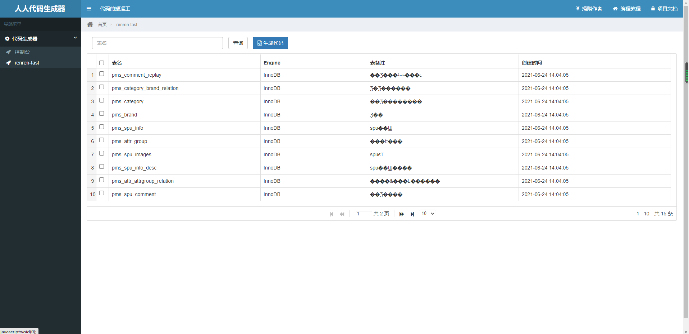
生成代码，下载 zip 替换项目
替换项目中 main，然后解决报错
模板核心
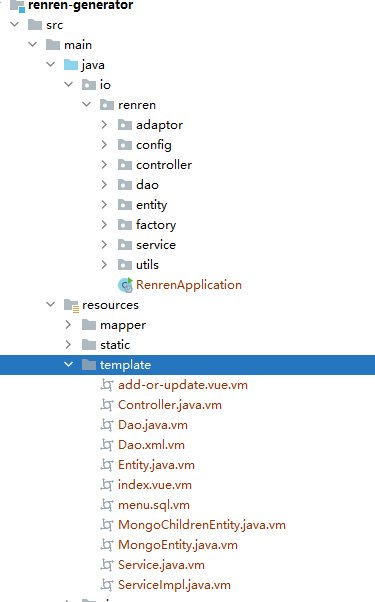
# 4. 创建公共模块 gulimall-common
在所有模块中第一件事先导入公共 gulimall-common
然后导入，mybatis-plus 导入最新的去官网复制
<properties> | |
<mybatis-plus.version>3.4.3.1</mybatis-plus.version> | |
<lombok.version>1.18.10</lombok.version> | |
<httpcore.version>4.4.12</httpcore.version> | |
<commons.lang.version>2.6</commons.lang.version> | |
</properties> | |
<dependencies> | |
<!--mybatis-plus 持久层 --> | |
<dependency> | |
<groupId>com.baomidou</groupId> | |
<artifactId>mybatis-plus-boot-starter</artifactId> | |
<version>${mybatis-plus.version}</version> | |
</dependency> | |
<dependency> | |
<groupId>org.projectlombok</groupId> | |
<artifactId>lombok</artifactId> | |
<version>${lombok.version}</version> | |
</dependency> | |
<!-- https://mvnrepository.com/artifact/org.apache.httpcomponents/httpcore --> | |
<dependency> | |
<groupId>org.apache.httpcomponents</groupId> | |
<artifactId>httpcore</artifactId> | |
<version>${httpcore.version}</version> | |
</dependency> | |
<dependency> | |
<groupId>commons-lang</groupId> | |
<artifactId>commons-lang</artifactId> | |
<version>${commons.lang.version}</version> | |
</dependency> | |
</dependencies> |
# 5.gulimall-prodcut 启动测试
整合 mybatis-plus
导入 mysql 驱动包在 common 模块中
配置 yml
#数据库连接配置spring:
datasource:
username: root
password: root
url: jdbc:mysql://192.168.61.128:3360/gulimall_pms
driver-class-name: com.mysql.jdbc.Driver
#mybatis-plus 配置mybatis-plus:
// 路径可以点进去获取默认路径
mapper-locations: classpath:/mapper/**/*.xml #配置扫描 mapper
global-config:
db-config:
id-type: auto # 主键自增
开启扫描 dao
@SpringBootApplication@MapperScan("com.atguigu.gulimall.product.dao")
public class GulimallProdcutApplication {
public static void main(String[] args) {
SpringApplication.run(GulimallProdcutApplication.class, args);
}}单元测试
注意：测试要与启动类同包同路径下创建
@SpringBootTest | |
public class GuliMallProductTest { | |
@Autowired | |
private BrandService brandService; | |
@Test | |
public void test(){ | |
BrandEntity entity = new BrandEntity(); | |
entity.setName("华为"); | |
boolean save = brandService.save(entity); | |
System.out.println(save); | |
} | |
} |
# 用人人逆向工程生成所有服务的代码
# 遇见无法加载主类报错
根据错误重新 clean 然后 install 如果报错就看报错信息根据信息修改对应错误
# 一：输入 netstat -ano 并回车查看在运行的端口号
# 三：通过端口号查看相应端口号
# netstat -ano | findstr “端口号”
# 四：通过端口 PID 查看端口运行程序
# tasklist | findstr “PID”
# 6. 把 Springboot 从 2.5.1 更换为 2.1.8.Release 的时候的报错
org.springframework.context.ApplicationContextException: Unable to start web server; nested exception is org.springframework.beans.factory.BeanCreationException: Error creating bean with name 'org.springframework.boot.autoconfigure.web.servlet.ServletWebServerFactoryConfiguration$EmbeddedTomcat': Initialization of bean failed; nested exception is java.lang.NoClassDefFoundError: org/springframework/boot/context/properties/ConfigurationPropertiesBean | |
at org.springframework.boot.web.servlet.context.ServletWebServerApplicationContext.onRefresh(ServletWebServerApplicationContext.java:156) ~[spring-boot-2.1.8.RELEASE.jar:2.1.8.RELEASE] | |
at org.springframework.context.support.AbstractApplicationContext.refresh(AbstractApplicationContext.java:543) ~[spring-context-5.1.9.RELEASE.jar:5.1.9.RELEASE] | |
at org.springframework.boot.web.servlet.context.ServletWebServerApplicationContext.refresh(ServletWebServerApplicationContext.java:141) ~[spring-boot-2.1.8.RELEASE.jar:2.1.8.RELEASE] | |
at org.springframework.boot.SpringApplication.refresh(SpringApplication.java:744) [spring-boot-2.1.8.RELEASE.jar:2.1.8.RELEASE] | |
at org.springframework.boot.SpringApplication.refreshContext(SpringApplication.java:391) [spring-boot-2.1.8.RELEASE.jar:2.1.8.RELEASE] | |
at org.springframework.boot.SpringApplication.run(SpringApplication.java:312) [spring-boot-2.1.8.RELEASE.jar:2.1.8.RELEASE] | |
at org.springframework.boot.SpringApplication.run(SpringApplication.java:1215) [spring-boot-2.1.8.RELEASE.jar:2.1.8.RELEASE] | |
at org.springframework.boot.SpringApplication.run(SpringApplication.java:1204) [spring-boot-2.1.8.RELEASE.jar:2.1.8.RELEASE] | |
at com.atguigu.gulimall.ware.GulimallWareApplication.main(GulimallWareApplication.java:10) [classes/:na] | |
Caused by: org.springframework.beans.factory.BeanCreationException: Error creating bean with name 'org.springframework.boot.autoconfigure.web.servlet.ServletWebServerFactoryConfiguration$EmbeddedTomcat': Initialization of bean failed; nested exception is java.lang.NoClassDefFoundError: org/springframework/boot/context/properties/ConfigurationPropertiesBean | |
at org.springframework.beans.factory.support.AbstractAutowireCapableBeanFactory.doCreateBean(AbstractAutowireCapableBeanFactory.java:601) ~[spring-beans-5.1.9.RELEASE.jar:5.1.9.RELEASE] | |
at org.springframework.beans.factory.support.AbstractAutowireCapableBeanFactory.createBean(AbstractAutowireCapableBeanFactory.java:515) ~[spring-beans-5.1.9.RELEASE.jar:5.1.9.RELEASE] | |
at org.springframework.beans.factory.support.AbstractBeanFactory.lambda$doGetBean$0(AbstractBeanFactory.java:320) ~[spring-beans-5.1.9.RELEASE.jar:5.1.9.RELEASE] | |
at org.springframework.beans.factory.support.DefaultSingletonBeanRegistry.getSingleton(DefaultSingletonBeanRegistry.java:222) ~[spring-beans-5.1.9.RELEASE.jar:5.1.9.RELEASE] | |
at org.springframework.beans.factory.support.AbstractBeanFactory.doGetBean(AbstractBeanFactory.java:318) ~[spring-beans-5.1.9.RELEASE.jar:5.1.9.RELEASE] | |
at org.springframework.beans.factory.support.AbstractBeanFactory.getBean(AbstractBeanFactory.java:199) ~[spring-beans-5.1.9.RELEASE.jar:5.1.9.RELEASE] | |
at org.springframework.beans.factory.support.ConstructorResolver.instantiateUsingFactoryMethod(ConstructorResolver.java:392) ~[spring-beans-5.1.9.RELEASE.jar:5.1.9.RELEASE] | |
at org.springframework.beans.factory.support.AbstractAutowireCapableBeanFactory.instantiateUsingFactoryMethod(AbstractAutowireCapableBeanFactory.java:1321) ~[spring-beans-5.1.9.RELEASE.jar:5.1.9.RELEASE] | |
at org.springframework.beans.factory.support.AbstractAutowireCapableBeanFactory.createBeanInstance(AbstractAutowireCapableBeanFactory.java:1160) ~[spring-beans-5.1.9.RELEASE.jar:5.1.9.RELEASE] | |
at org.springframework.beans.factory.support.AbstractAutowireCapableBeanFactory.doCreateBean(AbstractAutowireCapableBeanFactory.java:555) ~[spring-beans-5.1.9.RELEASE.jar:5.1.9.RELEASE] | |
at org.springframework.beans.factory.support.AbstractAutowireCapableBeanFactory.createBean(AbstractAutowireCapableBeanFactory.java:515) ~[spring-beans-5.1.9.RELEASE.jar:5.1.9.RELEASE] | |
at org.springframework.beans.factory.support.AbstractBeanFactory.lambda$doGetBean$0(AbstractBeanFactory.java:320) ~[spring-beans-5.1.9.RELEASE.jar:5.1.9.RELEASE] | |
at org.springframework.beans.factory.support.DefaultSingletonBeanRegistry.getSingleton(DefaultSingletonBeanRegistry.java:222) ~[spring-beans-5.1.9.RELEASE.jar:5.1.9.RELEASE] | |
at org.springframework.beans.factory.support.AbstractBeanFactory.doGetBean(AbstractBeanFactory.java:318) ~[spring-beans-5.1.9.RELEASE.jar:5.1.9.RELEASE] | |
at org.springframework.beans.factory.support.AbstractBeanFactory.getBean(AbstractBeanFactory.java:204) ~[spring-beans-5.1.9.RELEASE.jar:5.1.9.RELEASE] | |
at org.springframework.boot.web.servlet.context.ServletWebServerApplicationContext.getWebServerFactory(ServletWebServerApplicationContext.java:210) ~[spring-boot-2.1.8.RELEASE.jar:2.1.8.RELEASE] | |
at org.springframework.boot.web.servlet.context.ServletWebServerApplicationContext.createWebServer(ServletWebServerApplicationContext.java:179) ~[spring-boot-2.1.8.RELEASE.jar:2.1.8.RELEASE] | |
at org.springframework.boot.web.servlet.context.ServletWebServerApplicationContext.onRefresh(ServletWebServerApplicationContext.java:153) ~[spring-boot-2.1.8.RELEASE.jar:2.1.8.RELEASE] | |
... 8 common frames omitted | |
Caused by: java.lang.NoClassDefFoundError: org/springframework/boot/context/properties/ConfigurationPropertiesBean | |
at org.springframework.cloud.context.properties.ConfigurationPropertiesBeans.postProcessBeforeInitialization(ConfigurationPropertiesBeans.java:76) ~[spring-cloud-context-3.0.3.jar:3.0.3] | |
at org.springframework.beans.factory.support.AbstractAutowireCapableBeanFactory.applyBeanPostProcessorsBeforeInitialization(AbstractAutowireCapableBeanFactory.java:414) ~[spring-beans-5.1.9.RELEASE.jar:5.1.9.RELEASE] | |
at org.springframework.beans.factory.support.AbstractAutowireCapableBeanFactory.initializeBean(AbstractAutowireCapableBeanFactory.java:1770) ~[spring-beans-5.1.9.RELEASE.jar:5.1.9.RELEASE] | |
at org.springframework.beans.factory.support.AbstractAutowireCapableBeanFactory.doCreateBean(AbstractAutowireCapableBeanFactory.java:593) ~[spring-beans-5.1.9.RELEASE.jar:5.1.9.RELEASE] | |
... 25 common frames omitted | |
Caused by: java.lang.ClassNotFoundException: org.springframework.boot.context.properties.ConfigurationPropertiesBean | |
at java.net.URLClassLoader.findClass(URLClassLoader.java:382) ~[na:1.8.0_231] | |
at java.lang.ClassLoader.loadClass(ClassLoader.java:418) ~[na:1.8.0_231] | |
at sun.misc.Launcher$AppClassLoader.loadClass(Launcher.java:355) ~[na:1.8.0_231] | |
at java.lang.ClassLoader.loadClass(ClassLoader.java:351) ~[na:1.8.0_231] | |
... 29 common frames omitted |
# 错误原因就是 2.5.1 对应的 springcloud 版本是 3.x，而替换为 springboot2.1.x 版本的时候应该对应替换 springcloud 的版本
<properties> | |
<java.version>1.8</java.version> | |
<spring-cloud.version>Greenwich.SR3</spring-cloud.version> 对应着2.1.x版本的springboot | |
</properties> |
# 7. 添加 Spring Cloud Alibaba 依赖
# 版本选择
** 由于 Spring Boot 1 和 Spring Boot 2 在 Actuator 模块的接口和注解有很大的变更，且 spring-cloud-commons 从 1.x.x 版本升级到 2.0.0 版本也有较大的变更，因此我们采取跟 SpringBoot 版本号一致的版本: **
**1.5.x 版本适用于 Spring Boot 1.5.x **
**2.0.x 版本适用于 Spring Boot 2.0.x **
2.1.x 版本适用于 Spring Boot 2.1.x
# 首先加入依赖管理坐标
<dependencyManagement> | |
<dependencies> | |
<dependency> | |
<groupId>com.alibaba.cloud</groupId> | |
<artifactId>spring-cloud-alibaba-dependencies</artifactId> | |
<version>2.1.0.RELEASE</version> | |
<type>pom</type> | |
<scope>import</scope> | |
</dependency> | |
</dependencies> | |
</dependencyManagement> |
添加了上述坐标就已经将 Spring Cloud Alibaba 版本锁定了，以后填入对应组件不用再写版本号
# 添加服务注册发现
SpringCloud Alibaba-Nacos [作为注册中心]
<dependency> | |
<groupId>com.alibaba.cloud</groupId> | |
<artifactId>spring-cloud-starter-alibaba-nacos-discovery</artifactId> | |
</dependency> |
# 测试远程服务调用
首先找到调用者确保调用者引入 open-feign 组件，被调用者是否注册服务
@SpringBootApplication | |
@MapperScan("com.atguigu.gulimall.member.dao") | |
@EnableDiscoveryClient | |
@EnableFeignClients(basePackages = "com.atguigu.gulimall.member.feign") // 调用者开起远程调用注解指定对应的包 | |
public class GulimallMemberApplication { | |
public static void main(String[] args) { | |
SpringApplication.run(GulimallMemberApplication.class, args); | |
} | |
} |
远程服务
@FeignClient("gulimall-coupon")// 指定被调用的服务名称 | |
public interface CouponFeignService { | |
@GetMapping("coupon/coupon/coupons") | |
R coupons(); | |
} |
# Nacos 做配置中心
# 1、pom.xml 引入 Nacos Config Starter。
<!-- 注册中心 --> | |
<dependency> | |
<groupId>com.alibaba.cloud</groupId> | |
<artifactId>spring-cloud-starter-alibaba-nacos-config</artifactId> | |
</dependency> |
# 2、在需要用配置中心管理服务应用的 /src/main/resources/bootstrap.properties 配 置文件中配置 Nacos
spring.application.name=gulimall-coupon | |
spring.cloud.nacos.config.server-addr=127.0.0.1:8848 |
// 服务启动控制台打印提示{name='gulimall-coupon.properties'} -》 需要一个coupon.properties的配置
Located property source: CompositePropertySource {name='NACOS', propertySources=[NacosPropertySource {name='gulimall-coupon.properties'}]}
# 3、在 nacos 中添加配置
在 nacos 中创建一个 应用名.properties 配置文件并编写配置
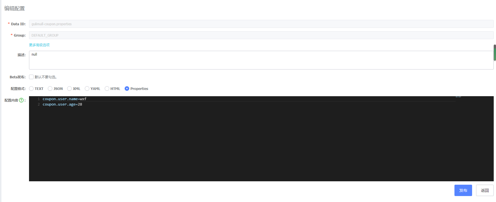
动态获取配置中心
@RefreshScope // 刷新配置中心注解 |
细节：
命名空间：做环境隔离，默认 public，可以根据开发测试生产环境进行隔离也可以通过微服务进行配置隔离，可通过下面配置选择对应配置中心的配置
spring.cloud.nacos.config.namespace=04a8869a-0ee9-4cc1-b198-aca7b2302a05 // 命名空间id |
配置集：就是所有配置的集合
配置分组：可以继续进行隔离
spring.cloud.nacos.config.group=dev 配置指定分组 |
加载多配置集，拆分配置管理
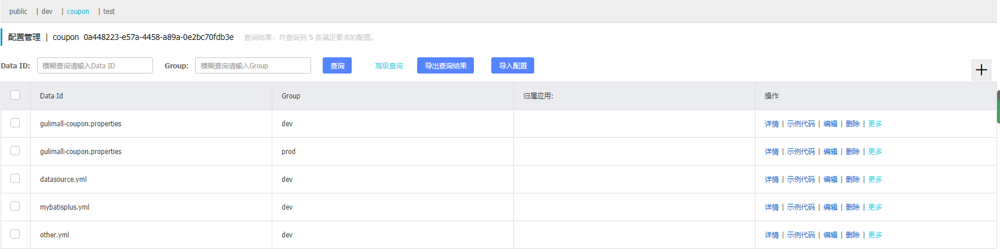
spring.application.name=gulimall-coupon | |
spring.cloud.nacos.config.server-addr=127.0.0.1:8848 | |
spring.cloud.nacos.config.namespace=0a448223-e57a-4458-a89a-0e2bc70fdb3e | |
spring.cloud.nacos.config.group=dev | |
spring.cloud.nacos.config.ext-config[0].data-id=datasource.yml | |
spring.cloud.nacos.config.ext-config[0].group=dev | |
spring.cloud.nacos.config.ext-config[0].refresh=true // 刷新 | |
spring.cloud.nacos.config.ext-config[1].data-id=mybatisplus.yml | |
spring.cloud.nacos.config.ext-config[1].group=dev | |
spring.cloud.nacos.config.ext-config[1].refresh=true | |
spring.cloud.nacos.config.ext-config[2].data-id=other.yml | |
spring.cloud.nacos.config.ext-config[2].group=dev | |
spring.cloud.nacos.config.ext-config[2].refresh=true |
# API 网关 Gateway
首先注册到 nacos 服务中心
坐标
<dependency> | |
<groupId>org.springframework.cloud</groupId> | |
<artifactId>spring-cloud-starter-gateway</artifactId> | |
</dependency> |
排除公共包中的 mybaitsplus 数据源配置，还有个什么生成自动配置
@SpringBootApplication(exclude = {DataSourceAutoConfiguration.class, IdentifierGeneratorAutoConfiguration.class}) |
编写网关配置文件
gateway: | |
routes: | |
- id: test_baidu // 随便id不重复就行 | |
uri: https://www.baidu.com // 转发到那个请求 | |
predicates: // 断言 为 true就转发 | |
- Query=url,baidu |
# 前端简单复习
# ES6 新特性
# let 声明变量
//var 声明的变量往往会越域 | |
//let 声明的变量有严格局部作用域 | |
{ | |
var a = 1; | |
let b = 2; | |
} | |
console.log(a); // 1 | |
console.log(b); // ReferenceError: b is not defined | |
//var 可以声明多次 | |
//let 只能声明一次 | |
var m = 1 | |
var m = 2 | |
let n = 3 | |
// let n = 4 | |
console.log(m) // 2 | |
console.log(n) // Identifier 'n' has already been declared | |
//var 会变量提升 | |
//let 不存在变量提升 | |
console.log(x); // undefined | |
var x = 10; | |
console.log(y); //ReferenceError: y is not defined | |
let y = 20; |
# const 声明常量（只读变量）
// 1. 声明之后不允许改变 | |
// 2. 一但声明必须初始化，否则会报错 | |
const a = 1; | |
a = 3; //Uncaught TypeError: Assignment to constant variable. |
# 解构表达式
# 数组解构
let arr = [1,2,3]; | |
// 以前我们想获取其中的值，只能通过角标。ES6 可以这样： | |
const [x,y,z] = arr;//x，y，z 将与 arr 中的每个位置对应来取值 | |
// 然后打印 | |
console.log(x,y,z); |
# 对象结构
const person = { | |
name: "jack", | |
age: 21, | |
language: ['java', 'js', 'css'] | |
} | |
// 解构表达式获取值，将 person 里面每一个属性和左边对应赋值 | |
const { name, age, language } = person; | |
// 等价于下面 | |
// const name = person.name; | |
// const age = person.age; | |
// const language = person.language; | |
// 可以分别打印 | |
console.log(name); | |
console.log(age); | |
console.log(language); | |
// 扩展：如果想要将 name 的值赋值给其他变量，可以如下，nn 是新的变量名 | |
const { name: nn, age, language } = person; | |
console.log(nn); | |
console.log(age); | |
console.log(language); |
# 字符串扩展
# 几个新的 API
ES6 为字符串扩展了几个新的 API： | |
- `includes()`：返回布尔值，表示是否找到了参数字符串。 | |
- `startsWith()`：返回布尔值，表示参数字符串是否在原字符串的头部。 | |
- `endsWith()`：返回布尔值，表示参数字符串是否在原字符串的尾部。 | |
let str = "hello.vue"; | |
console.log(str.startsWith("hello"));//true | |
console.log(str.endsWith(".vue"));//true | |
console.log(str.includes("e"));//true | |
console.log(str.includes("hello"));//true |
# 字符串模板
模板字符串相当于加强版的字符串，用反引号 `,除了作为普通字符串，还可以用来定义多行 | |
字符串，还可以在字符串中加入变量和表达式。 | |
// 1、多行字符串 | |
let ss = ` | |
<div> | |
<span>hello world<span> | |
</div> | |
` | |
console.log(ss) | |
// 2、字符串插入变量和表达式。变量名写在 ${} 中，${} 中可以放 | |
入 JavaScript 表达式。 | |
let name = "张三"; | |
let age = 18; | |
let info = `我是${name}，今年${age}了`; | |
console.log(info) | |
// 3、字符串中调用函数 | |
function fun() { | |
return "这是一个函数" | |
} | |
let sss = `O(∩_∩)O 哈哈~，${fun()}`; | |
console.log(sss); // O (∩_∩) O 哈哈～，这是一个函数 |
# 函数优化
# 函数参数默认值
// 在 ES6 以前，我们无法给一个函数参数设置默认值，只能采用变通写法： | |
function add(a, b) { | |
// 判断 b 是否为空，为空就给默认值 1 | |
b = b || 1; | |
return a + b; | |
} | |
// 传一个参数 | |
console.log(add(10)); | |
// 现在可以这么写：直接给参数写上默认值，没传就会自动使用默认值 | |
function add2(a , b = 1) { | |
return a + b; | |
} | |
// 传一个参数 | |
console.log(add2(10)); |
# 不定参数
不定参数用来表示不确定参数个数，形如，... 变量名，由... 加上一个具名参数标识符组成。 具名参数只能放在参数列表的最后，并且有且只有一个不定参数
function fun(...values) { | |
console.log(values.length) | |
} | |
fun(1, 2) //2 | |
fun(1, 2, 3, 4) // |
# 箭头函数
// 以前声明一个方法 | |
// var print = function (obj) { | |
// console.log(obj); | |
// } | |
// 可以简写为： | |
var print = obj => console.log(obj); | |
// 测试调用 | |
print(100); |
// 两个参数的情况： | |
var sum = function (a, b) { | |
return a + b; | |
} | |
// 简写为： | |
// 当只有一行语句，并且需要返回结果时，可以省略 {} , 结果会自动返回。 | |
var sum2 = (a, b) => a + b; | |
// 测试调用 | |
console.log(sum2(10, 10));//20 | |
// 代码不止一行，可以用 `{}` 括起来 | |
var sum3 = (a, b) => { | |
c = a + b; | |
return c; | |
}; | |
// 测试调用 | |
console.log(sum3(10, 20));//30 |
# 实战：箭头函数结合解构表达式
// 需求，声明一个对象，hello 方法需要对象的个别属性 | |
// 以前的方式： | |
const person = { | |
name: "jack", | |
age: 21, | |
language: ['java', 'js', 'css'] | |
} | |
function hello(person) { | |
console.log("hello," + person.name)} | |
// 现在的方式 | |
var hello2 = ({ name }) => { console.log("hello," + name) }; | |
// 测试 | |
hello2(person); |
# 对象优化
# 新增的 API
ES6 给 Object 拓展了许多新的方法，如：
- keys(obj)：获取对象的所有 key 形成的数组
- values(obj)：获取对象的所有 value 形成的数组
- entries(obj)：获取对象的所有 key 和 value 形成的二维数组。格式：`[[k1,v1],[k2,v2],...]` - assign(dest, ...src) ：将多个 src 对象的值 拷贝到 dest 中。（第一层为深拷贝，第二层为浅
拷贝）
const person = { | |
name: "jack", | |
age: 21, | |
language: ['java', 'js', 'css'] | |
} | |
console.log(Object.keys(person));//["name", "age", "language"] | |
console.log(Object.values(person));//["jack", 21, Array(3)] | |
console.log(Object.entries(person));//[Array(2), Array(2), Array(2)] | |
const target = { a: 1 }; | |
const source1 = { b: 2 }; | |
const source2 = { c: 3 }; | |
//Object.assign 方法的第一个参数是目标对象，后面的参数都是源对象。 | |
Object.assign(target, source1, source2); | |
console.log(target)//{a: 1, b: 2, c: 3} |
# 声明对象简写
const age = 23 | |
const name = "张三"// 传统 | |
const person1 = { age: age, name: name } | |
console.log(person1) | |
// ES6：属性名和属性值变量名一样，可以省略 | |
const person2 = { age, name } | |
console.log(person2) //{age: 23, name: "张三"} |
# 对象的函数属性简写
let person = { | |
name: "jack", | |
// 以前： | |
eat: function (food) { | |
console.log(this.name + "在吃" + food); | |
}, | |
// 箭头函数版：这里拿不到 this | |
eat2: food => console.log(person.name + "在吃" + food), | |
// 简写版： | |
eat3(food) { | |
console.log(this.name + "在吃" + food); | |
} | |
} | |
person.eat("apple"); |
# 对象拓展运算符
拓展运算符（...）用于取出参数对象所有可遍历属性然后拷贝到当前对象。
// 1、拷贝对象（深拷贝） | |
let person1 = { name: "Amy", age: 15 } | |
let someone = { ...person1 } | |
console.log(someone) //{name: "Amy", age: 15} | |
// 2、合并对象 | |
let age = { age: 15 } | |
let name = { name: "Amy" } | |
let person2 = { ...age, ...name } // 如果两个对象的字段名重复，后面对象字 | |
// 段值会覆盖前面对象的字段值 | |
console.log(person2) //{age: 15, name: "Amy"} |
# map 和 reduce
数组中新增了 map 和 reduce 方法。
# map:
map()：接收一个函数，将原数组中的所有元素用这个函数处理后放入新数组返回。 | |
let arr = ['1', '20', '-5', '3']; | |
console.log(arr) | |
arr = arr.map(s => parseInt(s)); | |
console.log(arr) |
# reduce:
语法：
arr.reduce(callback,[initialValue])
reduce 为数组中的每一个元素依次执行回调函数，不包括数组中被删除或从未被赋值的元
素，接受四个参数：初始值（或者上一次回调函数的返回值），当前元素值，当前索引，调
用 reduce 的数组。
callback （执行数组中每个值的函数，包含四个参数）
1、previousValue （上一次调用回调返回的值，或者是提供的初始值（initialValue））
2、currentValue （数组中当前被处理的元素）
3、index （当前元素在数组中的索引）
4、array （调用 reduce 的数组）
initialValue （作为第一次调用 callback 的第一个参数。）
const arr = [1,20,-5,3]; | |
// 没有初始值： | |
console.log(arr.reduce((a,b)=>a+b));//19 | |
console.log(arr.reduce((a,b)=>a*b));//-300// 指定初始值： | |
console.log(arr.reduce((a,b)=>a+b,1));//20 | |
console.log(arr.reduce((a,b)=>a*b,0));//-0 |
# Promise 语法
const promise = new Promise(function (resolve, reject) { | |
// 执行异步操作 | |
if (/* 异步操作成功 */) { | |
resolve(value);// 调用 resolve，代表 Promise 将返回成功的结果 | |
} else { | |
reject(error);// 调用 reject，代表 Promise 会返回失败结果 | |
} |
# 使用箭头函数可以简写为：
const promise = new Promise((resolve, reject) =>{ | |
// 执行异步操作 | |
if (/* 异步操作成功 */) { | |
resolve(value);// 调用 resolve，代表 Promise 将返回成功的结果 | |
} else { | |
reject(error);// 调用 reject，代表 Promise 会返回失败结果 | |
} | |
}); |
# Promise 改造以前嵌套方
new Promise((resolve, reject) => { | |
$.ajax({ | |
url: "mock/user.json", | |
success(data) { | |
console.log("查询用户：", data); | |
resolve(data.id); | |
}, | |
error(error) { | |
console.log("出现异常了：" + error); | |
} | |
}); | |
}).then((userId) => { | |
return new Promise((resolve, reject) => { | |
$.ajax({ | |
url: `mock/user_corse_${userId}.json`, success(data) { | |
console.log("查询到课程：", data); | |
resolve(data.id); | |
}, | |
error(error) { | |
console.log("出现异常了：" + error); | |
} | |
}); | |
}); | |
}).then((corseId) => { | |
console.log(corseId); | |
$.ajax({ | |
url: `mock/corse_score_${corseId}.json`, | |
success(data) { | |
console.log("查询到分数：", data); | |
}, | |
error(error) { | |
console.log("出现异常了：" + error); | |
} | |
}); | |
}); |
# 优化处理
优化：通常在企业开发中，会把 promise 封装成通用方法，如下：封装了一个通用的 get 请 求方法；
let get = function (url, data) { // 实际开发中会单独放到 common.js 中 | |
return new Promise((resolve, reject) => { | |
$.ajax({ | |
url: url, | |
type: "GET", | |
data: data, | |
success(result) { | |
resolve(result); | |
}, | |
error(error) { | |
reject(error); | |
} | |
}); | |
}) | |
}// 使用封装的 get 方法，实现查询分数 | |
get("mock/user.json").then((result) => { | |
console.log("查询用户：", result); | |
return get(`mock/user_corse_${result.id}.json`); | |
}).then((result) => { | |
console.log("查询到课程：", result); | |
return get(`mock/corse_score_${result.id}.json`) | |
}).then((result) => { | |
console.log("查询到分数：", result); | |
}).catch(() => { | |
console.log("出现异常了：" + error); | |
}); |
通过比较，我们知道了 Promise 的扁平化设计理念，也领略了这种 上层设计 带来的好处。 我们的项目中会使用到这种异步处理的方式；
# 模块化
# 什么是模块化
模块化就是把代码进行拆分，方便重复利用。类似 java 中的导包：要使用一个包，必须先
导包。而 JS 中没有包的概念，换来的是 模块。
模块功能主要由两个命令构成： export 和 import 。
export命令用于规定模块的对外接口。import命令用于导入其他模块提供的功能。
# export
比如我定义一个 js 文件:hello.js，里面有一个对象
const util = { | |
sum(a,b){ | |
return a + b; | |
} | |
} |
我可以使用 export 将这个对象导出：
const util = { | |
sum(a,b){return a + b; | |
} | |
} | |
export {util}; |
当然，也可以简写为：
export const util = { | |
sum(a,b){ | |
return a + b; | |
} | |
} |
export 不仅可以导出对象，一切 JS 变量都可以导出。比如：基本类型变量、函数、数组、对象。
当要导出多个值时，还可以简写。比如我有一个文件：user.js：
var name = "jack" | |
var age = 21 | |
export {name,age} |
省略名称
上面的导出代码中，都明确指定了导出的变量名，这样其它人在导入使用时就必须准确写出
变量名，否则就会出错。
因此 js 提供了 default 关键字，可以对导出的变量名进行省略
例如： | |
// 无需声明对象的名字 | |
export default { | |
sum(a,b){ | |
return a + b; | |
} | |
} |
这样，当使用者导入时，可以任意起名字
# 3）、import
使用 export 命令定义了模块的对外接口以后，其他 JS 文件就可以通过 import 命令加载这
个模块。
例如我要使用上面导出的 util：
// 导入 utilimport util from 'hello.js' | |
// 调用 util 中的属性 | |
util.sum(1,2) | |
// 要批量导入前面导出的 name 和 age： | |
import {name, age} from 'user.js' | |
console.log(name + " , 今年"+ age +"岁了") |
但是上面的代码暂时无法测试，因为浏览器目前还不支持 ES6 的导入和导出功能。除非借
助于工具，把 ES6 的语法进行编译降级到 ES5，比如 Babel-cli 工具
# 商品服务 - API
# 获取分类树，利用递归
方法一：普通方法，首先找到所有顶层分类，然后利用递归获取子集分类
@Override | |
public List<CategoryEntity> listTree() { | |
List<CategoryEntity> entityList = list(); | |
List<CategoryEntity> collect = getChildren(entityList); | |
return collect; | |
} | |
private List<CategoryEntity> getChildren(List<CategoryEntity> entityList) { | |
List<CategoryEntity> resList = new ArrayList<>(); | |
for (CategoryEntity entity : entityList) { | |
if(1 == entity.getCatLevel()){ | |
resList.add(getChildrens(entity, entityList)); | |
} | |
} | |
return resList; | |
} | |
private CategoryEntity getChildrens(CategoryEntity entity, List<CategoryEntity> entityList) { | |
List<CategoryEntity> resList = new ArrayList<>(); | |
for (CategoryEntity en : entityList) { | |
if (entity.getCatId() == en.getParentCid()) { | |
resList.add(getChildrens(en, entityList)); | |
} | |
} | |
entity.setChildrens(resList); | |
return entity; | |
} |
方法二：利用 java8 流处理
@Override | |
public List<CategoryEntity> listTree() { | |
List<CategoryEntity> entityList = list(); | |
List<CategoryEntity> collect = entityList.stream().filter(category -> category.getParentCid() == 0).map(menu -> { | |
menu.setChildrens(getChildrenJava8(menu,entityList)); | |
return menu; | |
} | |
).collect(Collectors.toList()); | |
return collect; | |
} | |
private List<CategoryEntity> getChildrenJava8(CategoryEntity menu, List<CategoryEntity> entityList) { | |
return entityList.stream().filter(e -> e.getParentCid() == menu.getCatId()).map(e -> { | |
e.setChildrens(getChildrenJava8(e,entityList)); | |
return e; | |
}).collect(Collectors.toList()); | |
} |
# 整合前端分类管理
前端使用的人人 fast，可以在系统管理中添加商品分类，添加就是向数据库添加，前端动态获取，renren-fast 已经帮我们做好了。
根据人人路径规则新增路径为 product/category 对应 url product-category 对应着去建 vue 页面也就是先建 product 文件夹下面创建 category.vue
更改地址为网关地址
然后把人人后端注册到 nacos 注册中心
# 配置网关
- id: admin_routes | |
uri: lb://renren-fast -- lb:负载均衡 | |
predicates: | |
- Path=/api/** -- 只要请求路径带api后面路径随意 | |
filters: | |
- RewritePath=/api/(?<segment>.*),/renren-fast/$\{segment} -- 拦截路径对路径进行替换 |
# 网关解决统一 跨域问题
@Bean | |
public CorsWebFilter corsWebFilter(){ | |
UrlBasedCorsConfigurationSource source = new UrlBasedCorsConfigurationSource(); | |
CorsConfiguration configuration = new CorsConfiguration(); | |
// 配置跨域 | |
// 允许所有请求头 | |
configuration.addAllowedHeader("*"); | |
// 允许所有请求方式 | |
configuration.addAllowedMethod("*"); | |
// 允许哪个来源 | |
configuration.addAllowedOrigin("*"); | |
// 允许带 cookie | |
configuration.setAllowCredentials(true); | |
configuration.setMaxAge(3600l);// 配置多久来一次预检请求 | |
source.registerCorsConfiguration("/**", configuration); | |
return new CorsWebFilter(source); | |
} |
# 微服务整合 swagger 文档
https://oxyzen-wxf.github.io/worknote/swagger-1/
# 配置 Product 服务的网关
- id: product_routes | |
uri: lb://gulimall-prodcut | |
predicates: | |
- Path=/api/product/** | |
filters: | |
- RewritePath=/api/(?<segment>.*),/$\{segment} | |
// 注意格式，模糊匹配放后面，精准度高的放在前面，要不然会被模糊匹配的拦截导致路由失败 | |
//访问路径：http://localhost:88/api/product/category/listTree | |
//转换路径：http://localhost:10000/product/category/listTree | |
//匹配表达：- RewritePath=/api/(?<segment>.*),/$\{segment} |
# 商品增删改查等前端后端操作
# 拖拽功能：
实现不同分类拖拽换分类的操作
| 参数 | 说明 | 类型 | 可选值 | 默认值 |
|---|---|---|---|---|
| allow-drop | 拖拽时判定目标节点能否被放置。 type 参数有三种情况：'prev'、'inner' 和 'next'，分别表示放置在目标节点前、插入至目标节点和放置在目标节点后 | Function(draggingNode, dropNode, type) | — | — |
| draggable | 是否开启拖拽节点功能 | boolean | — | false |
| 事件名称 | 说明 | 回调参数 | ||
| :-----------: | :--------------------------------: | :----------------------------------------------------------: | ||
| node-drag-end | 拖拽结束时（可能未成功）触发的事件 | 共四个参数，依次为：被拖拽节点对应的 Node、结束拖拽时最后进入的节点（可能为空）、被拖拽节点的放置位置（before、after、inner）、event |
allowDrop(draggingNode, dropNode, type) { | |
//1、被拖动的当前节点以及所在的父节点总层数不能大于 3 | |
//1）、被拖动的当前节点总层数 | |
console.log("allowDrop:", draggingNode, dropNode, type); | |
// | |
this.countNodeLevel(draggingNode); | |
// 当前正在拖动的节点 + 父节点所在的深度不大于 3 即可 | |
let deep = Math.abs(this.maxLevel - draggingNode.level) + 1; | |
console.log("深度：", deep); | |
// this.maxLevel | |
if (type == "inner") { | |
// console.log( | |
// `this.maxLevel：${this.maxLevel}；draggingNode.data.catLevel：${draggingNode.data.catLevel}；dropNode.level：${dropNode.level}` | |
// ); | |
return deep + dropNode.level <= 3; | |
} else { | |
return deep + dropNode.parent.level <= 3; | |
} | |
}, | |
countNodeLevel(node) { | |
// 找到所有子节点，求出最大深度 | |
if (node.childNodes != null && node.childNodes.length > 0) { | |
for (let i = 0; i < node.childNodes.length; i++) { | |
if (node.childNodes[i].level > this.maxLevel) { | |
this.maxLevel = node.childNodes[i].level; | |
} | |
this.countNodeLevel(node.childNodes[i]); | |
} | |
} | |
}, |
拖拽添加数组看源码
批量勾选删除
| 方法名 | 说明 | 参数 |
|---|---|---|
| getCheckedNodes | 若节点可被选择（即 show-checkbox 为 true ），则返回目前被选中的节点所组成的数组 | (leafOnly, includeHalfChecked) 接收两个 boolean 类型的参数，1. 是否只是叶子节点，默认值为 false 2. 是否包含半选节点，默认值为 false |
# 品牌管理
# 利用人人自动生成工具生成前端代码
优化生成的页面
滑动按钮监听 change 时间进行更新
| 参数 | 说明 | 类型 | 可选值 | 默认值 |
|---|---|---|---|---|
| active-value | switch 打开时的值 | boolean / string / number | — | true |
| inactive-value | switch 关闭时的值 | boolean / string / number | — | false |
# 云存储 - 文件存储
创建 bucket
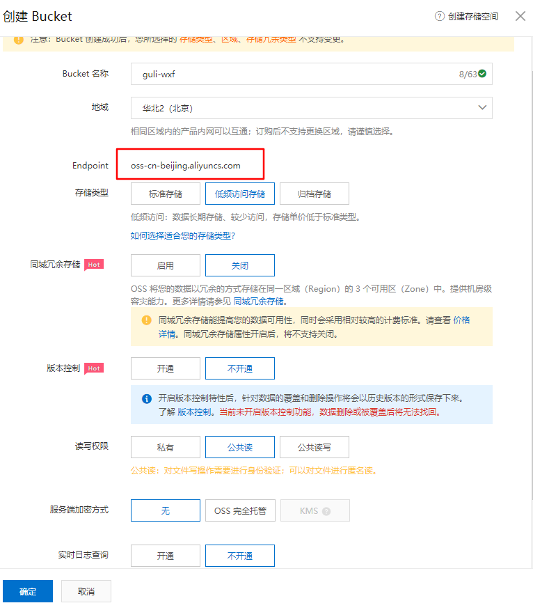
使用下面方式进行文件云存储
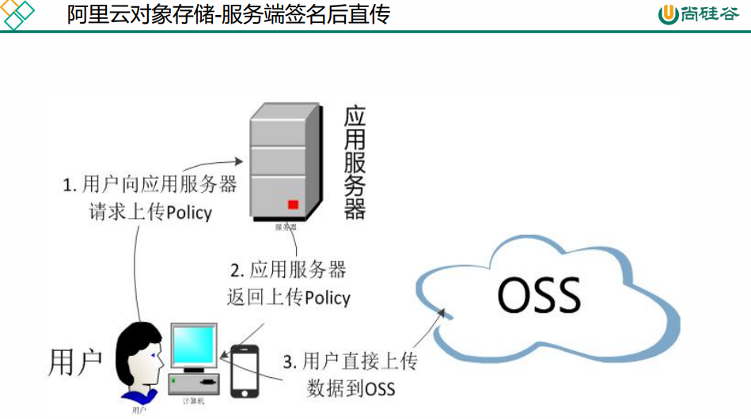
阿里云 oss 坐标
<dependency> | |
<groupId>com.aliyun.oss</groupId> | |
<artifactId>aliyun-sdk-oss</artifactId> | |
<version>3.10.2</version> | |
</dependency> |
这里使用 springcloudalibaba 里面的坐标
https://github.com/alibaba/spring-cloud-alibaba/blob/master/README-zh.md
<dependencyManagement> | |
<dependencies> | |
<dependency> | |
<groupId>com.alibaba.cloud</groupId> | |
<artifactId>spring-cloud-alibaba-dependencies</artifactId> | |
<version>2.1.0.RELEASE</version> | |
<type>pom</type> | |
<scope>import</scope> | |
</dependency> | |
</dependencies> | |
</dependencyManagement> | |
// 根据选定的阿里微服务管理的坐标点进去去找对应的oss坐标，版本对不上则找不到对应的坐标 |
不配置如下配置测试将会报错
spring: | |
alicloud: | |
oss: | |
endpoint: oss-cn-beijing.aliyuncs.com | |
access-key: key | |
secret-key: secret |
测试代码
@Autowired | |
OSSClient ossClient; | |
@Test | |
public void upload() throws FileNotFoundException { | |
InputStream inputStream = new FileInputStream("D:\\img\\study\\帅气.jpg"); | |
// 上传文件流 | |
ossClient.putObject("guli-wxf", "ceshi.jpg", inputStream); | |
// 关闭客户端 | |
ossClient.shutdown(); | |
System.out.println("上传成功！"); | |
} |
存储方式采用前端直穿 oss，管后端要签名认证，如果 oss 放在 common 里面所有的服务即使不用 oss 也要配置，所以创建新的服务专门提供第三方服务
阿里文档地址：https://help.aliyun.com/document_detail/31926.html?spm=a2c4g.11186623.6.1746.14786e023lzsRu
获取签名代码
package com.atguigu.gulimall.thirdparty.controller; | |
import com.aliyun.oss.OSS; | |
import com.aliyun.oss.common.utils.BinaryUtil; | |
import com.aliyun.oss.model.MatchMode; | |
import com.aliyun.oss.model.PolicyConditions; | |
import com.atguigu.common.utils.R; | |
import org.springframework.beans.factory.annotation.Autowired; | |
import org.springframework.beans.factory.annotation.Value; | |
import org.springframework.web.bind.annotation.RequestMapping; | |
import org.springframework.web.bind.annotation.RestController; | |
import javax.servlet.ServletException; | |
import javax.servlet.http.HttpServletRequest; | |
import javax.servlet.http.HttpServletResponse; | |
import java.io.IOException; | |
import java.time.LocalDate; | |
import java.time.format.DateTimeFormatter; | |
import java.util.Date; | |
import java.util.LinkedHashMap; | |
import java.util.Map; | |
/** | |
* @author WangXuefeng | |
* @version 1.0 | |
* @date 2021/7/13 11:46 | |
* @description | |
*/ | |
@RestController | |
public class OssController { | |
@Autowired | |
OSS ossClient; | |
@Value("${spring.cloud.alicloud.access-key}") | |
private String accessId; | |
@Value("${spring.cloud.alicloud.oss.endpoint}") | |
private String endpoint; | |
@Value("${spring.cloud.alicloud.bucket}") | |
private String bucket; | |
@RequestMapping("/oss/policy") | |
protected R policy(HttpServletRequest request, HttpServletResponse response) | |
throws ServletException, IOException { | |
String host = "https://" + bucket + "." + endpoint; //host 的格式为 bucketname.endpoint | |
//callbackUrl 为 上传回调服务器的 URL，请将下面的 IP 和 Port 配置为您自己的真实信息。 | |
String callbackUrl = "http://88.88.88.88:8888"; | |
DateTimeFormatter formatter = DateTimeFormatter.ofPattern("yyyy-MM-dd"); | |
String format = LocalDate.now().format(formatter); | |
String dir = format + "/"; // 用户上传文件时指定的前缀。 | |
try { | |
long expireTime = 30; | |
long expireEndTime = System.currentTimeMillis() + expireTime * 1000; | |
Date expiration = new Date(expireEndTime); | |
// PostObject 请求最大可支持的文件大小为 5 GB，即 CONTENT_LENGTH_RANGE 为 5*1024*1024*1024。 | |
PolicyConditions policyConds = new PolicyConditions(); | |
policyConds.addConditionItem(PolicyConditions.COND_CONTENT_LENGTH_RANGE, 0, 1048576000); | |
policyConds.addConditionItem(MatchMode.StartWith, PolicyConditions.COND_KEY, dir); | |
String postPolicy = ossClient.generatePostPolicy(expiration, policyConds); | |
byte[] binaryData = postPolicy.getBytes("utf-8"); | |
String encodedPolicy = BinaryUtil.toBase64String(binaryData); | |
String postSignature = ossClient.calculatePostSignature(postPolicy); | |
Map<String, String> respMap = new LinkedHashMap<String, String>(); | |
respMap.put("accessid", accessId); | |
respMap.put("policy", encodedPolicy); | |
respMap.put("signature", postSignature); | |
respMap.put("dir", dir); | |
respMap.put("host", host); | |
respMap.put("expire", String.valueOf(expireEndTime / 1000)); | |
// respMap.put("expire", formatISO8601Date(expiration)); | |
return R.ok().put("data", respMap); | |
} catch (Exception e) { | |
// Assert.fail(e.getMessage()); | |
System.out.println(e.getMessage()); | |
} finally { | |
ossClient.shutdown(); | |
} | |
return R.error(); | |
} | |
} |
配置网关
需要地址形式：localhost:88/api/thirdparty/oss/policy
- id: third_party_routes | |
uri: lb://gulimall-third-party | |
predicates: | |
- Path=/api/thirdparty/** | |
filters: | |
- RewritePath=/api/thirdparty/(?<segment>.*),/$\{segment} |
前端上传
设置阿里 oss 跨域访问
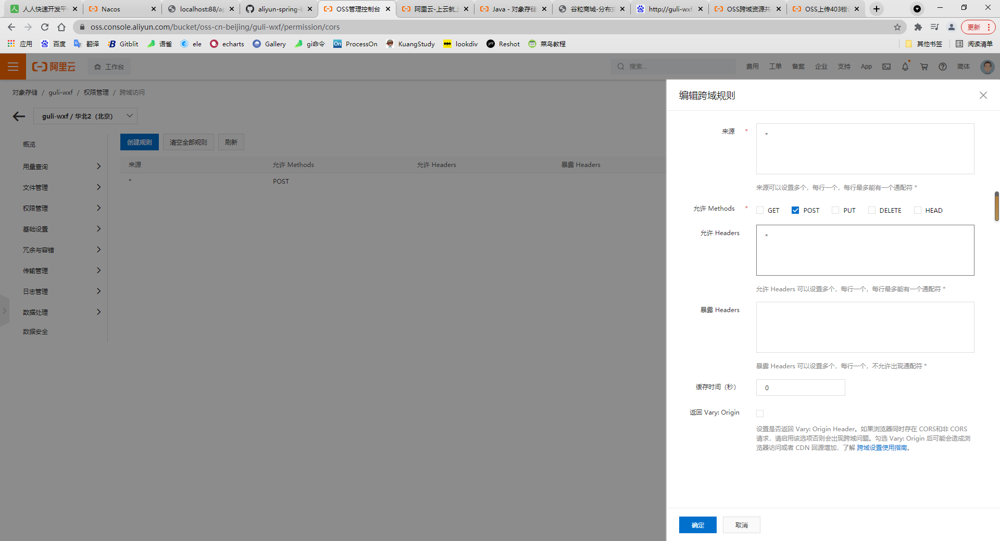
# 前端表单检验规则
** 自定义校验规则：自定义校验 callback 必须被调用。 **
rules: { | |
pass: [ | |
{ validator: validatePass, trigger: 'blur' } | |
] | |
} |
代码
firstLetter: [ | |
{ | |
validator: (rule, value, callback) => { | |
if (!value) { | |
callback(new Error("检索首字母不能为空！")); | |
} else if (!/^[a-zA-Z]$/.test(value)) { | |
callback(new Error("检索首字母必须为a-z或者A-Z！")); | |
} else { | |
callback(); | |
} | |
}, | |
trigger: "blur", | |
}, | |
] |
Js 里面为什么 0==“” 会是 true?
v-model.number
number 修饰符会把 v-model 的值转换成数值类型。
# 后端校验 JSR303
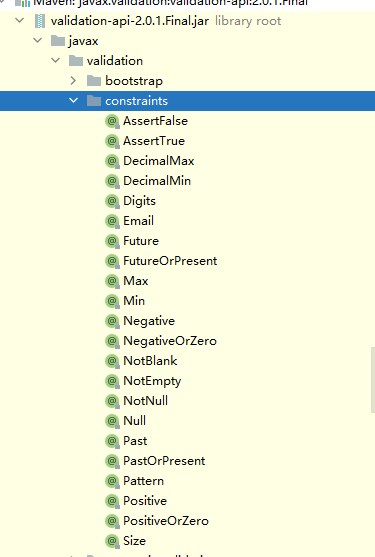
@RequestMapping("/save") | |
public R save(@Valid @RequestBody BrandEntity brand, BindingResult result){ | |
if (result.hasErrors()) { | |
Map<String,Object> map = new HashMap<>(); | |
// 获取校验错误结果 | |
result.getFieldErrors().forEach(error -> { | |
// 错误消息的提示 | |
String message = error.getDefaultMessage(); | |
// 获取错误的属性的名字 | |
String field = error.getField(); | |
map.put(field,message); | |
}); | |
return R.error(400,"提交的数据不合法").put("data", map); | |
} | |
brandService.save(brand); | |
return R.ok(); | |
} |
# 统一处理异常
/** | |
* 集中处理所有异常 | |
*/ | |
@Slf4j | |
//@ResponseBody | |
//@ControllerAdvice(basePackages = "com.atguigu.gulimall.product.controller") | |
@RestControllerAdvice(basePackages = "com.atguigu.gulimall.product.controller") | |
public class GulimallExceptionControllerAdvice { | |
@ExceptionHandler(value= MethodArgumentNotValidException.class) | |
public R handleVaildException(MethodArgumentNotValidException e){ | |
log.error("数据校验出现问题{}，异常类型：{}",e.getMessage(),e.getClass()); | |
BindingResult bindingResult = e.getBindingResult(); | |
Map<String,String> errorMap = new HashMap<>(); | |
bindingResult.getFieldErrors().forEach((fieldError)->{ | |
errorMap.put(fieldError.getField(),fieldError.getDefaultMessage()); | |
}); | |
return R.error(BizCodeEnume.VAILD_EXCEPTION.getCode(),BizCodeEnume.VAILD_EXCEPTION.getMsg()).put("data",errorMap); | |
} | |
@ExceptionHandler(value = Throwable.class) | |
public R handleException(Throwable throwable){ | |
log.error("错误：",throwable); | |
return R.error(BizCodeEnume.UNKNOW_EXCEPTION.getCode(),BizCodeEnume.UNKNOW_EXCEPTION.getMsg()); | |
} | |
} |
# 后端分组校验使用
每个校验的注解中都有 groups 属性，我们只需要创建不同分组的接口就行，我们就可以使用接口名地 不同来区分分组，例如添加请求我们需要实体类 id 必须为空，更新时候 id 必须不为空，我就可以这样做
AddGroup UpdateGroup 这两个接口分别是添加与更新分组 |
例子
//brandId 上面的 NotNull 和 Null 注解的 groups 就说明了在哪种分组的时候生效，那么怎么指定哪个生效呢？，看下面 controller 中的代码 | |
/** | |
* 品牌 id | |
*/ | |
@NotNull(message = "修改必须指定品牌id",groups = {UpdateGroup.class}) | |
@Null(message = "新增不能指定id",groups = {AddGroup.class}) | |
@TableId | |
private Long brandId; | |
/** | |
* 品牌名 | |
*/ | |
@NotBlank(message = "品牌名必须提交",groups = {AddGroup.class,UpdateGroup.class}) | |
private String name; |
@Target({ElementType.TYPE, ElementType.METHOD, ElementType.PARAMETER}) | |
@Retention(RetentionPolicy.RUNTIME) | |
@Documented | |
public @interface Validated { | |
Class<?>[] value() default {}; // 指定分组的接口 是数组形式的 | |
} |
public R save(@Validated({AddGroup.class}) @RequestBody BrandEntity brand /*BindingResult result*/)// 此保存接口明确指出校验使用 AddGroup 分组，也就是 Null 注解生效 |
注意：这个时候使用了分组，那么所有的校验注解都要使用分组否则不生效，有点麻烦呀～～
# 自定义校验
模仿已写好的注解来实现，想要实现自定义校验就要遵循 JSR303 的规则，注解加校验器的联合使用。
@Target({ METHOD, FIELD, ANNOTATION_TYPE, CONSTRUCTOR, PARAMETER, TYPE_USE }) | |
@Retention(RUNTIME) | |
@Documented | |
@Constraint(validatedBy = { }) | |
public @interface NotNull { | |
// 下面的这三个属性是自定义注解中默认的三个 | |
// 配置错误提示消息，默认去指定配置文件中找，这里我们复制他的配置文件名来修改 | |
String message() default "{javax.validation.constraints.NotNull.message}"; | |
// 支持分组 | |
Class<?>[] groups() default { }; | |
// 附带的 | |
Class<? extends Payload>[] payload() default { }; | |
} |
自定义注解
@Documented | |
@Constraint(validatedBy = { ListValueConstraintValidator.class }) // 需要指定我们自定的校验器 | |
@Target({ METHOD, FIELD, ANNOTATION_TYPE, CONSTRUCTOR, PARAMETER, TYPE_USE }) | |
@Retention(RUNTIME) | |
public @interface ListValue { | |
String message() default "{com.atguigu.common.valid.ListValue.message}";// 去我们的配置文件获取 | |
Class<?>[] groups() default { }; | |
Class<? extends Payload>[] payload() default { }; | |
int[] vals() default { }; | |
} |
# 配置 | |
com.atguigu.common.valid.ListValue.message=必须提交指定的值 |
校验器：需要实现 ConstraintValidator 接口并将注解和指定类型作为泛型实现
public class ListValueConstraintValidator implements ConstraintValidator<ListValue,Integer> { | |
private Set<Integer> set = new HashSet<>(); | |
// 初始化方法 | |
@Override | |
public void initialize(ListValue constraintAnnotation) { | |
int[] vals = constraintAnnotation.vals(); | |
for (int val : vals) { | |
set.add(val); | |
} | |
} | |
// 判断是否校验成功 | |
/** | |
* | |
* @param value 需要校验的值 | |
* @param context | |
* @return | |
*/ | |
@Override | |
public boolean isValid(Integer value, ConstraintValidatorContext context) { | |
return set.contains(value); | |
} | |
} |
# spu 与 sku，编写前端添加分类属性等页面功能
# 父子组件传值的使用
el 树形节点点击事件
| 事件名称 | 说明 | 回调参数 |
|---|---|---|
| node-click | 节点被点击时的回调 | 共三个参数，依次为：传递给 data 属性的数组中该节点所对应的对象、节点对应的 Node、节点组件本身。 |
子组件给父组件传值
this.$emit("tree-node-click", data, node, component);
this.$emit ("点击事件名称", 传递的数据)
父组件使用，可以在使用子组件的时候填上子组件传递的事件，并监听事件获取传递地 数据
<category @tree-node-click="treeNodeClick"></category>
// 并在methods中监听该方法
比如当子组件进行添加，或者任何操作，完成后需要告诉父组件，让父组件监听子组件，就可以达到子组件完成了任务，父组件根据子组件完成进行监听处理后续操作
# 后端对应有关联表的多对多情况，在数据多的情况不建议进行连表查询入 left right join 连接查询
# 平台属性
# 商品维护
https://www.cnblogs.com/dfzj/p/13610975.html
sync 语法糖：
当遇到上面情况，子组件想改变父组件中的值，可以直接写成：
子组件中写成：this.$emit ("'update:visable', false") ------ visable 是父组件中的值 'update:visable' 是固定写法，传 false 过去
父组件中写成：:visable.sync = "visable"
总结：这样写虽然子组件看不出简化，但是使用父组件的人就用得很爽，不需要再 @自定义事件名 = 自定义函数名 ($event), 然后再父组件的 methons 去改变这个值
# 非父子组件传值
非父子组件（跨级组件和兄弟组件）通信时，使用了 bus （中央事件总线）的一个方法，用来触发和接收事件，进一步起到通信的作用。
公共 js
// 公共 bus.js | |
// 非父子组件之间传值，需要定义个公共的公共实例文件 bus.js，作为中间仓库来传值，不然路由组件之间达不到传值的效果 | |
import Vue from 'vue' | |
export default new Vue() |
// 组件 B | |
// 引入公共的 bug，来做为中间传达的工具 | |
import Bus from './bus.js' | |
// 在 mounted 进行监听 | |
mounted () { | |
// 用 $on 事件来接收参数 | |
Bus.$on('msgToB', (data) => { | |
//data 就是组件 A 传过来的值 | |
console.log(data) | |
}) | |
}, |
组件A | |
// 引入公共的 bug，来做为中间传达的工具 | |
import Bus from './bus.js' | |
// 创建方法进行传递值 | |
// 用 $emit 事件来传递参数 | |
Bus.$emit('msgToB', this.msg) |
# Vue 组件间的通信 pubsub-js 实现步骤解析
# 后端 当传给前端的属性为空的时候就指定告诉 springmvc 为空的属性不转为 json 传过去
使用这个注解
package com.fasterxml.jackson.annotation; | |
import java.io.Serializable; | |
import java.lang.annotation.ElementType; | |
import java.lang.annotation.Retention; | |
import java.lang.annotation.RetentionPolicy; | |
import java.lang.annotation.Target; | |
@Target({ElementType.ANNOTATION_TYPE, ElementType.METHOD, ElementType.FIELD, ElementType.TYPE, ElementType.PARAMETER}) | |
@Retention(RetentionPolicy.RUNTIME) | |
@JacksonAnnotation | |
public @interface JsonInclude { | |
JsonInclude.Include value() default JsonInclude.Include.ALWAYS; // 默认为 JsonInclude.Include.ALWAYS 总是转为 json，可以修改为为空不转 json |
@JsonInclude(value = JsonInclude.Include.NON_EMPTY) | |
@TableField(exist = false) | |
private List<CategoryEntity> childrens; |
# 发布商品
VO: 前端后端传输模型
TO: 分布式之间传输数据模型
# 微服务 idea 内存过大设置每个服务占用的最大内存，和统一重启方法
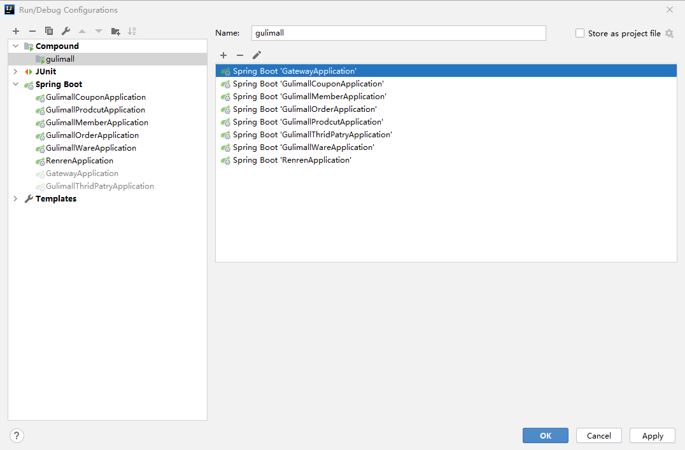
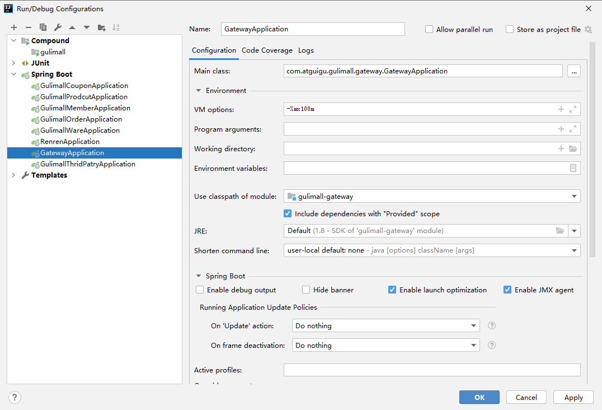
-Xmx100m 最大内存 100
# spu 管理
配置传送前端格式化事件配置
spring: | |
jackson: | |
date-format: yyyy-MM-dd HH:mm:ss |
# 仓储服务管理
- 添加注册中心
- 配置服务名称
- 开启服务注册发现
- 开启 mybatisplus 包扫描
- 开启事务注解
- 添加网关路径
# 配置打印 sql 语句
logging: | |
level: | |
com.atguigu: debug 指定哪个包 |
# 分布式基础总结
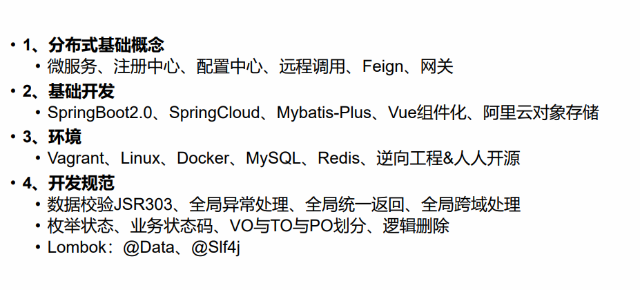
# 分布式高级
# Elasticsearch
** 笔记地址：**https://oxyzen-wxf.github.io/database/elasticsearch/es-1/
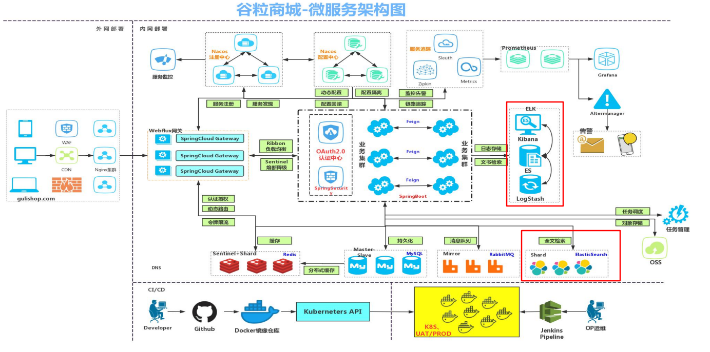
# 商城业务
ES 嵌入需要指定属性为 nested 类型，要不然就会发生错误查询
PUT my-index-000001/_doc/1 | |
{ | |
"group" : "fans", | |
"user" : [ | |
{ | |
"first" : "John", | |
"last" : "Smith" | |
}, | |
{ | |
"first" : "Alice", | |
"last" : "White" | |
} | |
] | |
} | |
// 能查到数据，不应该查到 | |
GET my-index-000001/_search | |
{ | |
"query": { | |
"bool": { | |
"must": [ | |
{ "match": { "user.first": "Alice" }}, | |
{ "match": { "user.last": "Smith" }} | |
] | |
} | |
} | |
} |
# 创建商品上架的 es
PUT product | |
{ | |
"mappings": { | |
"properties": { | |
"skuId": { | |
"type": "long" | |
}, | |
"spuId": { | |
"type": "keyword" | |
}, | |
"skuTitle": { | |
"type": "text", | |
"analyzer": "ik_smart" | |
}, | |
"skuPrice": { | |
"type": "keyword" | |
}, | |
"skuImg": { | |
"type": "keyword", | |
"index": false, | |
"doc_values": false | |
}, | |
"saleCount": { | |
"type": "long" | |
}, | |
"hasStock": { | |
"type": "boolean" | |
}, | |
"hotScore": { | |
"type": "long" | |
}, | |
"brandId": { | |
"type": "long" | |
}, | |
"catalogId": { | |
"type": "long" | |
}, | |
"brandName": { | |
"type": "keyword", | |
"index": false, | |
"doc_values": false | |
}, | |
"brandImg": { | |
"type": "keyword", | |
"index": false, | |
"doc_values": false | |
}, | |
"catalogName": { | |
"type": "keyword", | |
"index": false, | |
"doc_values": false | |
}, | |
"attrs": { | |
"type": "nested", | |
"properties": { | |
"attrId": { | |
"type": "long" | |
}, | |
"attrName": { | |
"type": "keyword", | |
"index": false, | |
"doc_values": false | |
}, | |
"attrValue": { | |
"type": "keyword" | |
} | |
} | |
} | |
} | |
} | |
} |
创建对应的实体类
# 上架实现
@Override | |
public void up(Long spuId) { | |
// 查询 spu 规格属性 | |
List<ProductAttrValueEntity> valueEntities = attrValueService.baseAttrlistforspu(spuId); | |
List<Long> attrIds = valueEntities.stream().map(v -> v.getAttrId()).collect(Collectors.toList()); | |
QueryWrapper<AttrEntity> attrWrapper = new QueryWrapper<>(); | |
attrWrapper.lambda().eq(AttrEntity::getSearchType,1).in(attrIds.size() > 0, AttrEntity::getAttrId,attrIds); | |
List<AttrEntity> attrEntities = attrService.list(attrWrapper); | |
List<Long> attrIds2 = attrEntities.stream().map(attr -> attr.getAttrId()).collect(Collectors.toList()); | |
Set<Long> idSet = new HashSet<>(attrIds2); | |
List<SkuEsModel.Attrs> attrsList = valueEntities.stream().filter(v -> idSet.contains(attrIds2)).map(v -> { | |
SkuEsModel.Attrs attrs = new SkuEsModel.Attrs(); | |
BeanUtils.copyProperties(v, attrs); | |
return attrs; | |
}).collect(Collectors.toList()); | |
// 查询当前 spuid 对应的所有 sku 信息品牌名字 | |
QueryWrapper<SkuInfoEntity> wrapper = new QueryWrapper<>(); | |
wrapper.lambda().eq(SkuInfoEntity::getSpuId,spuId); | |
List<SkuInfoEntity> skuInfoEntityList = skuInfoService.list(wrapper); | |
List<Long> longList = skuInfoEntityList.stream().map(SkuInfoEntity::getSkuId).collect(Collectors.toList()); | |
// TODO 远程调用，库存系统查询是否有库存 | |
Map<Long, Boolean> stockMap = null; | |
try { | |
R<List<SkuHasStockVo>> skuHasStock = wareFeignService.getSkuHasStock(longList); | |
List<SkuHasStockVo> data = skuHasStock.getData(); | |
stockMap = data.stream().collect(Collectors.toMap(SkuHasStockVo::getSkuId, SkuHasStockVo::getHasStock)); | |
} catch (Exception e) { | |
log.error("库存服务查询异常：原因{}",e); | |
} | |
// 封装每个 sku 信息 | |
Map<Long, Boolean> finalStockMap = stockMap; | |
List<SkuEsModel> uoProducts = skuInfoEntityList.stream().map(sku -> { | |
// 组装需要的数据 | |
SkuEsModel esModel = new SkuEsModel(); | |
BeanUtils.copyProperties(sku, esModel); | |
esModel.setSkuPrice(sku.getPrice()); | |
esModel.setSkuImg(sku.getSkuDefaultImg()); | |
// TODO 热度评分。 | |
esModel.setHotScore(0l); | |
BrandEntity brandEntity = brandService.getById(esModel.getBrandId()); | |
esModel.setBrandName(brandEntity.getName()); | |
esModel.setBrandImg(brandEntity.getLogo()); | |
CategoryEntity categoryEntity = categoryService.getById(esModel.getCatalogId()); | |
esModel.setCatalogName(categoryEntity.getName()); | |
esModel.setAttrs(attrsList); | |
if(finalStockMap == null){ | |
esModel.setHasStock(true); | |
} else { | |
esModel.setHasStock(finalStockMap.get(sku.getSkuId())); | |
} | |
return esModel; | |
}).collect(Collectors.toList()); | |
// 存到 es | |
R r = searchFeignService.productStatusUp(uoProducts); | |
if (r.getCode() == 0) { | |
// 成功 修改 spu 的状态 | |
baseMapper.updateSpuStatus(spuId, ProductConstant.StatusEnum.SPU_UP.getCode()); | |
} else { | |
// 远程失败 | |
// TODO 重复调用？接口幂等性 | |
} | |
} |
保存 es 接口
@Override | |
public boolean productStatusUp(List<SkuEsModel> skuEsModels) throws IOException { | |
//1. 在 es 中建立索引，建立号映射关系（doc/json/product-mapping.json） | |
//2. 在 ES 中保存这些数据 | |
BulkRequest bulkRequest = new BulkRequest(); | |
for (SkuEsModel skuEsModel : skuEsModels) { | |
// 构造保存请求 | |
IndexRequest indexRequest = new IndexRequest(EsConstant.PRODUCT_INDEX); | |
indexRequest.id(skuEsModel.getSkuId().toString()); | |
String jsonString = JSON.toJSONString(skuEsModel); | |
indexRequest.source(jsonString, XContentType.JSON); | |
bulkRequest.add(indexRequest); | |
} | |
BulkResponse bulk = esRestClient.bulk(bulkRequest, MyElasticSearchConfig.COMMON_OPTIONS); | |
//TODO 如果批量错误 | |
boolean hasFailures = bulk.hasFailures(); | |
List<String> collect = Arrays.asList(bulk.getItems()).stream().map(item -> item.getId()).collect(Collectors.toList()); | |
log.info("商品上架完成：{}",collect); | |
return hasFailures; | |
} |
# 首页整合 thyemleaf 模板
# nginx 搭建域名
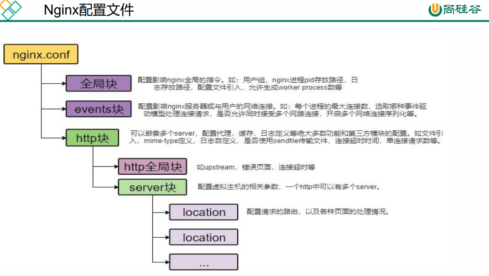
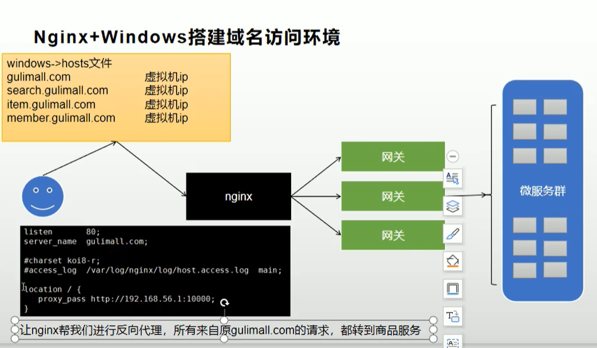
配置 nginx 反向代理直接代理对应服务
server { | |
listen 9001; | |
server_name localhost; | |
location ~ /eduservice/ { | |
proxy_pass http://127.0.0.1:8001; | |
} | |
location ~ /eduoss/ { | |
proxy_pass http://127.0.0.1:8002; | |
} | |
location ~ /eduvod/ { | |
proxy_pass http://127.0.0.1:8003; | |
} | |
location ~ /educms/ { | |
proxy_pass http://127.0.0.1:8004; | |
} | |
location ~ /edumsm/ { | |
proxy_pass http://127.0.0.1:8005; | |
} | |
location ~ /educenter/ { | |
proxy_pass http://127.0.0.1:8150; | |
} | |
location ~ /eduorder/ { | |
proxy_pass http://127.0.0.1:8007; | |
} | |
location ~ /staservice/ { | |
proxy_pass http://127.0.0.1:8008; | |
} | |
} |
# 配置 nginx 代理网关
首先配置上游服务器配置配置网关地址，可以配置多个，在总配置文件的 http 里面配置
upstream gulimall{// 组名 gulimall | |
server 192.168.1.5:88; // 可配置多个网关地址 | |
} |
修改 conf.d 下面的.conf 的动态代理 改为上游服务器的组名
upstream gulimall{ | |
server 192.168.1.5:88; | |
} |
配置网关
- id: gulimall_host_routes | |
uri: lb://gulimall-prodcut | |
predicates: | |
- Host=**.gulimall.com -- 对应主机匹配 |
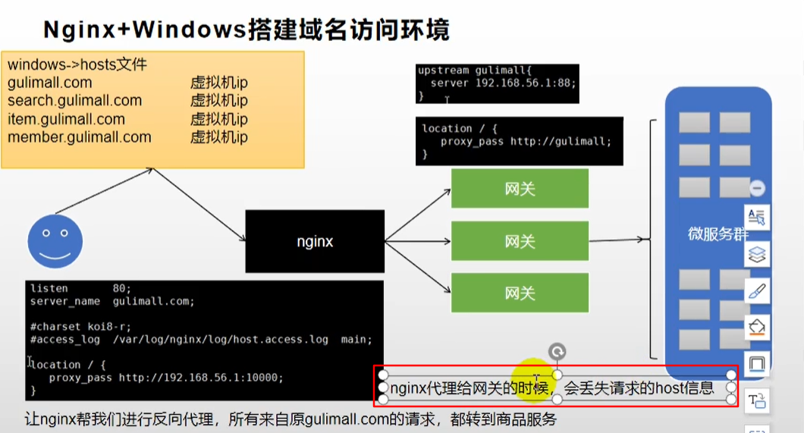
nginx 反向代理不配置默认会丢失很多请求信息在转发给网关的时候
设置代理的时候带上 header 的主机头
location / { | |
proxy_set_header Host $host;-- 带上请求头 | |
proxy_pass http://gulimall; | |
} |
# 压力测试
# 性能指标
响应时间（Response Time: RT）
响应时间指用户从客户端发起一个请求开始，到客户端接收到从服务器端返回的响
应结束，整个过程所耗费的时间。
HPS（Hits Per Second） ：每秒点击次数，单位是次 / 秒。
TPS（Transaction per Second）：系统每秒处理交易数，单位是笔 / 秒。
QPS（Query per Second）：系统每秒处理查询次数，单位是次 / 秒。
对于互联网业务中，如果某些业务有且仅有一个请求连接，那么 TPS=QPS=HPS，一
般情况下用 TPS 来衡量整个业务流程，用 QPS 来衡量接口查询次数，用 HPS 来表
示对服务器单击请求。无论 TPS、QPS、HPS, 此指标是衡量系统处理能力非常重要的指标，越大越好，根据经
验，一般情况下：金融行业：1000TPS~50000TPS，不包括互联网化的活动
保险行业：100TPS~100000TPS，不包括互联网化的活动
制造行业：10TPS~5000TPS
互联网电子商务：10000TPS~1000000TPS
互联网中型网站：1000TPS~50000TPS
互联网小型网站：500TPS~10000TPS
最大响应时间（Max Response Time） 指用户发出请求或者指令到系统做出反应（响应）
的最大时间。最少响应时间（Mininum ResponseTime） 指用户发出请求或者指令到系统做出反应（响
应）的最少时间。90% 响应时间（90% Response Time） 是指所有用户的响应时间进行排序，第 90% 的响
应时间。从外部看，性能测试主要关注如下三个指标
- 吞吐量：每秒钟系统能够处理的请求数、任务数。
- 响应时间：服务处理一个请求或一个任务的耗时。
- 错误率：一批请求中结果出错的请求所占比例。
# JMeter
# 1、JMeter 安装
https://jmeter.apache.org/download_jmeter.cgi
下载对应的压缩包，解压运行 jmeter.bat 即可
# 2、JMeter 压测示例
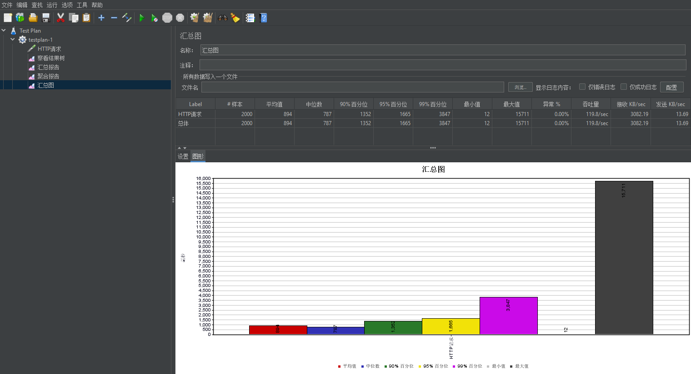
性能简单优化，调优 jvm 内存，设置 tomcat 最大连接数等等
启动压测 & 查看分析结果
有错误率同开发确认，确定是否允许错误的发生或者错误率允许在多大的范围内；
Throughput 吞吐量每秒请求的数大于并发数，则可以慢慢的往上面增加；若在压测的机
器性能很好的情况下，出现吞吐量小于并发数，说明并发数不能再增加了，可以慢慢的
往下减，找到最佳的并发数；压测结束，登陆相应的 web 服务器查看 CPU 等性能指标，进行数据的分析；
最大的 tps，不断的增加并发数，加到 tps 达到一定值开始出现下降，那么那个值就是
最大的 tps。最大的并发数：最大的并发数和最大的 tps 是不同的概率，一般不断增加并发数，达到
一个值后，服务器出现请求超时，则可认为该值为最大的并发数。压测过程出现性能瓶颈，若压力机任务管理器查看到的 cpu、网络和 cpu 都正常，未达到 90% 以上，则可以说明服务器有问题，压力机没有问题。
影响性能考虑点包括：
数据库、应用程序、中间件（tomact、Nginx）、网络和操作系统等方面
首先考虑自己的应用属于 CPU 密集型还是 IO 密集型
# 3、JMeter Address Already in use 错误解决
windows 本身提供的端口访问机制的问题。
Windows 提供给 TCP/IP 链接的端口为 1024-5000，并且要四分钟来循环回收他们。就导致
我们在短时间内跑大量的请求时将端口占满了。
cmd 中，用 regedit 命令打开注册表
在 HKEY_LOCAL_MACHINE\SYSTEM\CurrentControlSet\Services\Tcpip\Parameters 下，
1 . 右击 parameters，添加一个新的 DWORD，名字为 MaxUserPort
2 . 然后双击 MaxUserPort，输入数值数据为 65534，基数选择十进制（如果是分布式运
行的话，控制机器和负载机器都需要这样操作哦）修改配置完毕之后记得重启机器才会生效
https://support.microsoft.com/zh-cn/help/196271/when-you-try-to-connect-from-tcp-ports-grea
ter-than-5000-you-receive-t
TCPTimedWaitDelay：30
# 性能监控
3、jconsole 与 jvisualvm
Jdk 的两个小工具 jconsole、jvisualvm（升级版的 jconsole）; 通过命令行启动，可监控本地和 远程应用。远程应用需要配置
# 1、jvisualvm 能干什么
监控内存泄露，跟踪垃圾回收，执行时内存、cpu 分析，线程分析...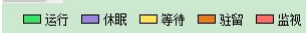
运行：正在运行的
休眠：sleep
等待：wait
驻留：线程池里面的空闲线程
监视：阻塞的线程，正在等待锁
# 2、安装插件方便查看 gc
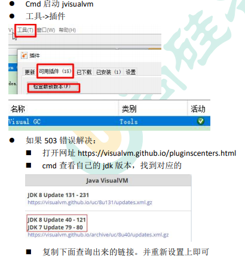
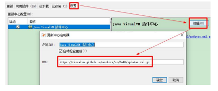
# 4、监控指标
1、中间件指标
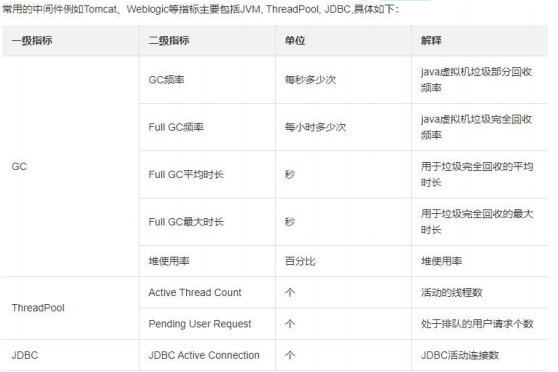
- 当前正在运行的线程数不能超过设定的最大值。一般情况下系统性能较好的情况下，线
程数最小值设置 50 和最大值设置 200 比较合适。 - 当前运行的 JDBC 连接数不能超过设定的最大值。一般情况下系统性能较好的情况下，
JDBC 最小值设置 50 和最大值设置 200 比较合适。 - ＧＣ频率不能频繁，特别是 FULL GC 更不能频繁，一般情况下系统性能较好的情况下，
JVM 最小堆大小和最大堆大小分别设置 1024M 比较合适。
2、数据库指标
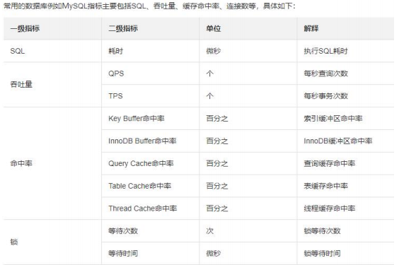
- SQL 耗时越小越好，一般情况下微秒级别。
- 命中率越高越好，一般情况下不能低于 95%。
- 锁等待次数越低越好，等待时间越短越好。
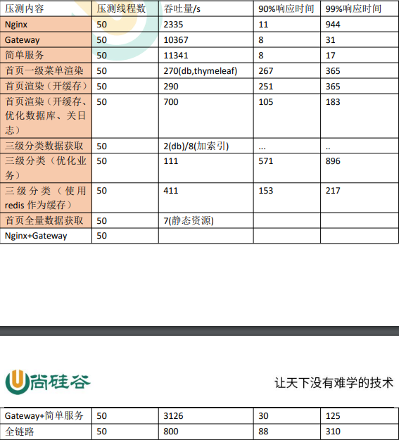
- 中间件越多，性能损失越大，大多都损失在网络交互了；
- 业务：
- Db（MySQL 优化）
- 模板的渲染速度（缓存）
- 静态资源
性能优化：数据库，中间件，jvm 堆内存，缓存，
# 5、JVM 分析 & 调优
jvm 调优，调的是稳定，并不能带给你性能的大幅提升。服务稳定的重要性就不用多说了， 保证服务的稳定，gc 永远会是 Java 程序员需要考虑的不稳定因素之一。复杂和高并发下的 服务，必须保证每次 gc 不会出现性能下降，各种性能指标不会出现波动，gc 回收规律而且 干净，找到合适的 jvm 设置。Full gc 最会影响性能，根据代码问题，避免 full gc 频率。可以 适当调大年轻代容量，让大对象可以在年轻代触发 yong gc，调整大对象在年轻代的回收频 次，尽可能保证大对象在年轻代回收，减小老年代缩短回收时间；
可以增大老年代新生代的内存来减少内存溢出和频繁的 gc
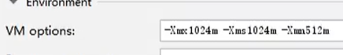
# Nginx 动静分离
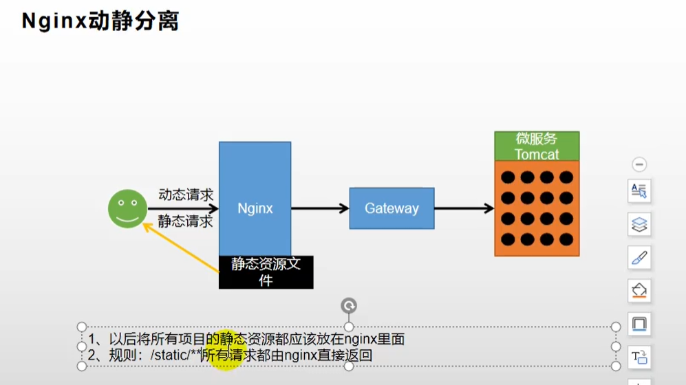
将静态文件导入 nginx 中，配置好对应配置，比如在 nginx 下面创建 static 目录，页面中引用的所有静态资源访问 /static 下面的静态资源。
nginx 配置
location /static/ { | |
root /usr/share/nginx/html; --页面中的html页面访问/static下面的静态文件 | |
} |
# 缓存
# 整合 Redis
- 添加依赖
- 简单配置
- 使用配置好的 Template
# 修改为 Redis 缓存后进行压力测试
报错：产生堆外内存溢出：OutOfDirectMemoryError
原因：springboot 2.0 默认使用 lettuce 作为操作 redis 的客户端。使用 netty 进行网络通信，lettuce 的 bug 导致 netty 堆外内存溢出，netty 如果没有指定堆外内存，则选择默认使用 idea 上面设置的 jvm 内存 - Xmx300m
解决方案：1、升级 lettuce 客户端。2、使用 jedis 客户端
改为 jedis
<dependency> | |
<groupId>org.springframework.boot</groupId> | |
<artifactId>spring-boot-starter-data-redis</artifactId> | |
<exclusions> | |
<exclusion> | |
<groupId>io.lettuce</groupId> | |
<artifactId>lettuce-core</artifactId> | |
</exclusion> | |
</exclusions> | |
</dependency> | |
<dependency> | |
<groupId>redis.clients</groupId> | |
<artifactId>jedis</artifactId> | |
</dependency> |
# 缓存穿透
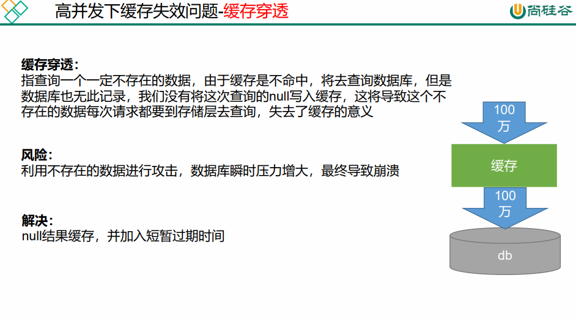
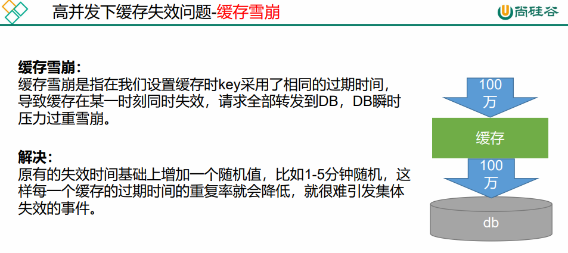
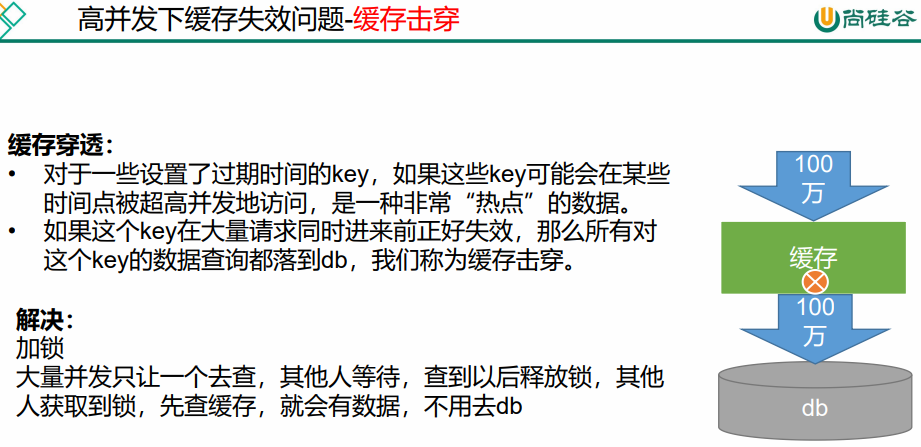
解决：
- 空结果缓存：解决缓存穿透
- 设置过期时间（加随机值）：解决缓存雪崩
- 枷锁：解决缓存击穿
# 单体枷锁
public Map<String, List<Catelog2Vo>> getCatalogJson() { | |
ValueOperations<String, String> ops = redisTemplate.opsForValue(); | |
String dataJson = ops.get("getCatalogJson"); | |
if (!StringUtils.isEmpty(dataJson)) { | |
System.out.println("缓存命中....."); | |
Map<String, List<Catelog2Vo>> result = JSON.parseObject(dataJson, new TypeReference<Map<String, List<Catelog2Vo>>>() { | |
}); | |
return result; | |
} | |
return getCatalogJsonDB(); | |
} | |
public Map<String, List<Catelog2Vo>> getCatalogJsonDB() { | |
synchronized (this) { | |
ValueOperations<String, String> ops = redisTemplate.opsForValue(); | |
String dataJson = ops.get("getCatalogJson"); | |
if (!StringUtils.isEmpty(dataJson)) { | |
Map<String, List<Catelog2Vo>> result = JSON.parseObject(dataJson, new TypeReference<Map<String, List<Catelog2Vo>>>() { | |
}); | |
return result; | |
} | |
System.out.println("查询了数据库"); | |
// 将数据库的多次查询变为一次 | |
List<CategoryEntity> selectList = this.baseMapper.selectList(null); | |
//1、查出所有分类 | |
//1、1）查出所有一级分类 | |
List<CategoryEntity> level1Categorys = getParent_cid(selectList, 0L); | |
// 封装数据 | |
Map<String, List<Catelog2Vo>> parentCid = level1Categorys.stream().collect(Collectors.toMap(k -> k.getCatId().toString(), v -> { | |
//1、每一个的一级分类，查到这个一级分类的二级分类 | |
List<CategoryEntity> categoryEntities = getParent_cid(selectList, v.getCatId()); | |
//2、封装上面的结果 | |
List<Catelog2Vo> catelog2Vos = null; | |
if (categoryEntities != null) { | |
catelog2Vos = categoryEntities.stream().map(l2 -> { | |
Catelog2Vo catelog2Vo = new Catelog2Vo(v.getCatId().toString(), null, l2.getCatId().toString(), l2.getName().toString()); | |
//1、找当前二级分类的三级分类封装成 vo | |
List<CategoryEntity> level3Catelog = getParent_cid(selectList, l2.getCatId()); | |
if (level3Catelog != null) { | |
List<Catelog2Vo.Category3Vo> category3Vos = level3Catelog.stream().map(l3 -> { | |
//2、封装成指定格式 | |
Catelog2Vo.Category3Vo category3Vo = new Catelog2Vo.Category3Vo(l2.getCatId().toString(), l3.getCatId().toString(), l3.getName()); | |
return category3Vo; | |
}).collect(Collectors.toList()); | |
catelog2Vo.setCatalog3List(category3Vos); | |
} | |
return catelog2Vo; | |
}).collect(Collectors.toList()); | |
} | |
return catelog2Vos; | |
})); | |
String s = JSON.toJSONString(parentCid); | |
ops.set("getCatalogJson",s); | |
return parentCid; | |
} | |
} |
# 分布式下加锁

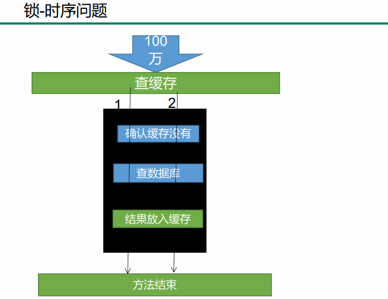
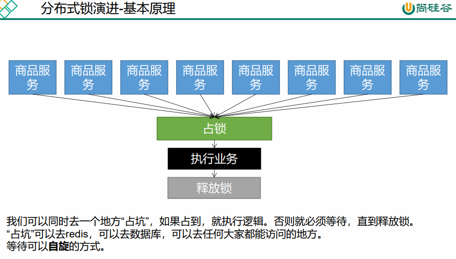
使用 Redis NX 方法
public Map<String, List<Catelog2Vo>> getCatalogJsonDBWithRedisLock() { | |
// 占分布式锁。。。执行业务 | |
Boolean lock = redisTemplate.opsForValue().setIfAbsent("lock", "1"); | |
if (lock) { | |
// 枷锁成功 执行业务 | |
// 枷锁成功 执行业务 | |
Map<String, List<Catelog2Vo>> dataFromDb = getDataFromDb(); | |
redisTemplate.delete("lock"); // 删除锁别人可以继续进入 | |
return dataFromDb; | |
} else { | |
return getCatalogJsonDBWithRedisLock(); | |
} | |
} | |
private Map<String, List<Catelog2Vo>> getDataFromDb() { | |
ValueOperations<String, String> ops = redisTemplate.opsForValue(); | |
String dataJson = ops.get("getCatalogJson"); | |
if (!StringUtils.isEmpty(dataJson)) { | |
Map<String, List<Catelog2Vo>> result = JSON.parseObject(dataJson, new TypeReference<Map<String, List<Catelog2Vo>>>() { | |
}); | |
return result; | |
} | |
System.out.println("查询了数据库"); | |
// 将数据库的多次查询变为一次 | |
List<CategoryEntity> selectList = this.baseMapper.selectList(null); | |
//1、查出所有分类 | |
//1、1）查出所有一级分类 | |
List<CategoryEntity> level1Categorys = getParent_cid(selectList, 0L); | |
// 封装数据 | |
Map<String, List<Catelog2Vo>> parentCid = level1Categorys.stream().collect(Collectors.toMap(k -> k.getCatId().toString(), v -> { | |
//1、每一个的一级分类，查到这个一级分类的二级分类 | |
List<CategoryEntity> categoryEntities = getParent_cid(selectList, v.getCatId()); | |
//2、封装上面的结果 | |
List<Catelog2Vo> catelog2Vos = null; | |
if (categoryEntities != null) { | |
catelog2Vos = categoryEntities.stream().map(l2 -> { | |
Catelog2Vo catelog2Vo = new Catelog2Vo(v.getCatId().toString(), null, l2.getCatId().toString(), l2.getName().toString()); | |
//1、找当前二级分类的三级分类封装成 vo | |
List<CategoryEntity> level3Catelog = getParent_cid(selectList, l2.getCatId()); | |
if (level3Catelog != null) { | |
List<Catelog2Vo.Category3Vo> category3Vos = level3Catelog.stream().map(l3 -> { | |
//2、封装成指定格式 | |
Catelog2Vo.Category3Vo category3Vo = new Catelog2Vo.Category3Vo(l2.getCatId().toString(), l3.getCatId().toString(), l3.getName()); | |
return category3Vo; | |
}).collect(Collectors.toList()); | |
catelog2Vo.setCatalog3List(category3Vos); | |
} | |
return catelog2Vo; | |
}).collect(Collectors.toList()); | |
} | |
return catelog2Vos; | |
})); | |
String s = JSON.toJSONString(parentCid); | |
ops.set("getCatalogJson", s); | |
return parentCid; | |
} |
# 问题
如果 getDataFromDb 出现问题那么将会出现死锁
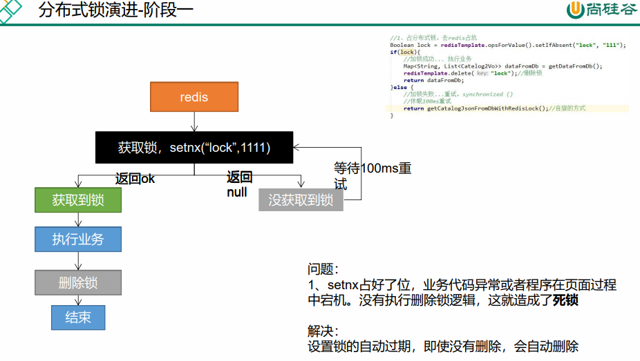
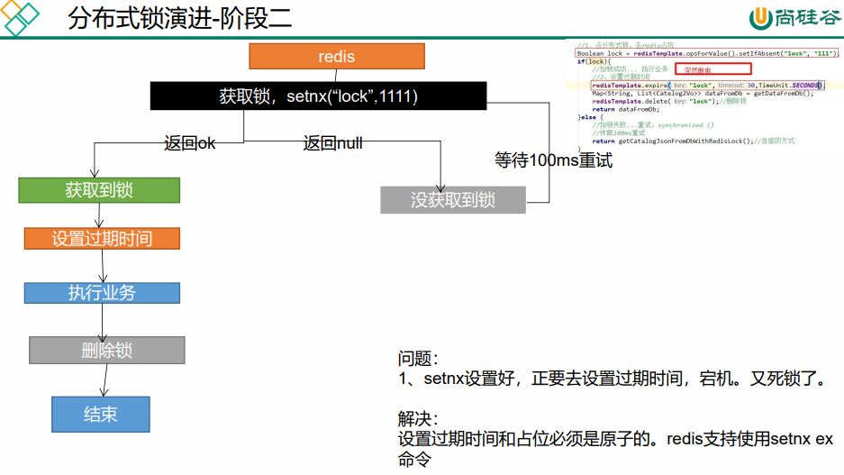
防止死锁
public Map<String, List<Catelog2Vo>> getCatalogJsonDBWithRedisLock() { | |
// 占分布式锁。。。执行业务 | |
Boolean lock = redisTemplate.opsForValue().setIfAbsent("lock", "1",300, TimeUnit.SECONDS); | |
if (lock) { | |
// 设置过期时间 | |
// redisTemplate.ex | |
// 枷锁成功 执行业务 | |
Map<String, List<Catelog2Vo>> dataFromDb = getDataFromDb(); | |
redisTemplate.delete("lock"); // 删除锁别人可以继续进入 | |
return dataFromDb; | |
} else { | |
return getCatalogJsonDBWithRedisLock(); | |
} | |
} |
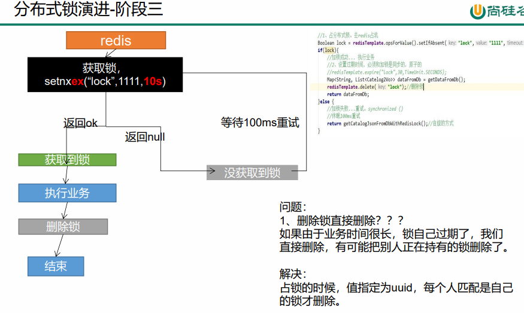
防止因为设置过期，业务时间长，导致失效，然后删掉了其他人的锁，导致很多人都能进入抢锁
解决方法：设置当前令牌，删除的时候去查询对应令牌是否是自己的再去删除
public Map<String, List<Catelog2Vo>> getCatalogJsonDBWithRedisLock() { | |
// 占分布式锁。。。执行业务 | |
String uuid = UUID.randomUUID().toString(); | |
Boolean lock = redisTemplate.opsForValue().setIfAbsent("lock", uuid,300, TimeUnit.SECONDS); | |
if (lock) { | |
// 设置过期时间 | |
// redisTemplate.ex | |
// 枷锁成功 执行业务 | |
Map<String, List<Catelog2Vo>> dataFromDb = getDataFromDb(); | |
String lockV = redisTemplate.opsForValue().get("lock"); | |
if (uuid.equals(lockV)) { | |
// 删除自己的锁 | |
redisTemplate.delete("lock"); // 删除锁别人可以继续进入 | |
} | |
return dataFromDb; | |
} else { | |
return getCatalogJsonDBWithRedisLock(); | |
} | |
} |
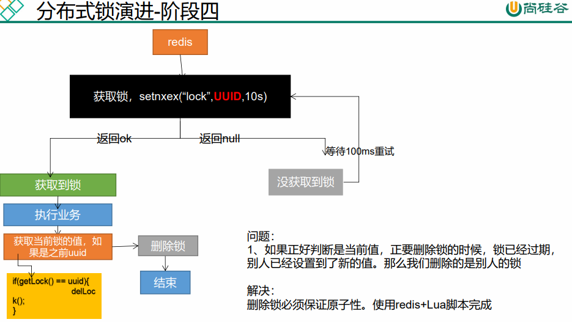
上面代码问题：在获取 lock 值进行匹配的时候，网络通信造成的时间导致值传过来的时候正好 redis 中的 lock 值过期了，这边获取到值进行比对肯定成功则删除的时候很可能删除别人的 lock，导致很多人都可以占到坑，所以再加一层，需要保证查询对比与删除是原子性的。
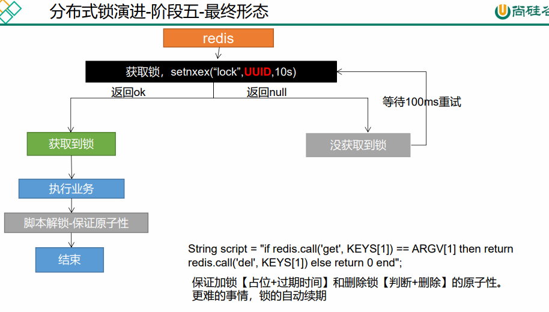
http://www.redis.cn/commands/set.html
public Map<String, List<Catelog2Vo>> getCatalogJsonDBWithRedisLockFinal() { | |
// 占分布式锁。。。执行业务 | |
String uuid = UUID.randomUUID().toString(); | |
Boolean lock = redisTemplate.opsForValue().setIfAbsent("lock", uuid, 300, TimeUnit.SECONDS); | |
if (lock) { | |
// 设置过期时间 | |
// redisTemplate.ex | |
// 枷锁成功 执行业务 | |
Map<String, List<Catelog2Vo>> dataFromDb; | |
try { | |
dataFromDb = getDataFromDb(); | |
} finally { | |
// 确保删除对比为原子性使用 redis 解锁脚本 | |
String script = "if redis.call(\"get\",KEYS[1]) == ARGV[1]\n" + | |
"then\n" + | |
" return redis.call(\"del\",KEYS[1])\n" + | |
"else\n" + | |
" return 0\n" + | |
"end"; | |
Integer lock1 = redisTemplate.execute(new DefaultRedisScript<Integer>(script, Integer.class), Arrays.asList("lock"), uuid); | |
} | |
return dataFromDb; | |
} else { | |
return getCatalogJsonDBWithRedisLock(); | |
} | |
} |
redis 分布式锁，看官网，使用 set ex nx 设置占坑，使用 uuid 随机做值，删除使用解锁脚本保证原子性。
分布式锁：https://oxyzen-wxf.github.io/computer-science/java/microservice/lock-1/
# 检索服务
# 搭建环境
检索服务跳转 search.gulimall.com: 首先在本地配置好域名映射同样映射到虚拟机地址，让该域名可以访问虚拟机，并上传静态文件到 nginx，修改 nginx 监听地址改为 *.gulimall.com，并配置网关对该域名转发对应得检索服务。
监听
listen 80; | |
server_name gulimall.com *.gulimall.com; 所有访问nginx服务器，域名匹配都将进行监听 这里可以多配置域名 空格隔开 |
转发
location / { | |
proxy_set_header Host $host; -- nginx转发网关的时候带上主机地址 | |
proxy_pass http://gulimall; | |
-- 因为总配置中设置了上游网关地址并且名字是gulimall，所以这里是配置告诉nginx转发给谁，统一转发给网关 | |
} |
网关配置
- id: gulimall_host_routes | |
uri: lb://gulimall-prodcut | |
predicates: | |
- Host=gulimall.com | |
- id: gulimall_search_routes | |
uri: lb://gulimall-search | |
predicates: | |
- Host=search.gulimall.com |
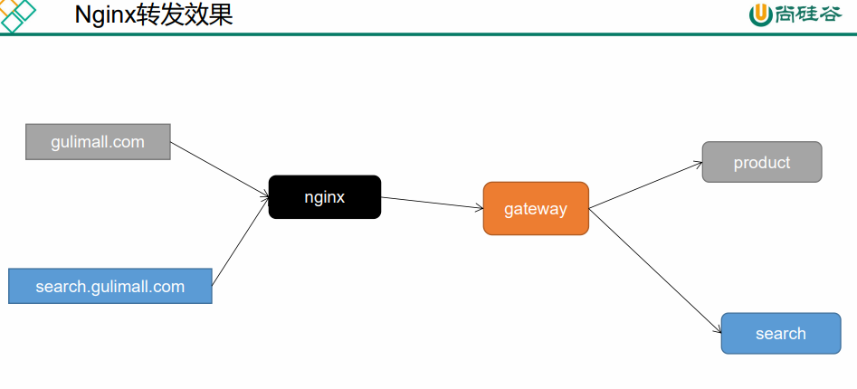
# 检索
封装检索条件交给 es 处理然后返回给前端
# Es 检索语句
模糊匹配 (match)，过滤 (filter)（按照属性、分类、品牌、价格区间，库存），排序 (sort)，分页 (from,size)，高亮
最难是聚合分析，根据查询出来的数据进行聚合分析出对应的属性分类品牌等等...
GET product/_search | |
{ | |
"query": { | |
"bool": { | |
"must": [ | |
{ | |
"match": { | |
"skuTitle": "xiaomi" | |
} | |
} | |
], | |
"filter": [ | |
{ | |
"terms": { | |
"brandId": [ | |
"4", | |
"2" | |
] | |
} | |
}, | |
{ | |
"term": { | |
"catalogId": "1439" | |
} | |
}, | |
{ | |
"nested": { | |
"path": "attrs", | |
"query": { | |
"bool": { | |
"must": [ | |
{ | |
"term": { | |
"attrs.attrId": { | |
"value": "2" | |
} | |
} | |
}, | |
{ | |
"terms": { | |
"attrs.attrValue": [ | |
"250", | |
"250" | |
] | |
} | |
} | |
] | |
} | |
} | |
} | |
}, | |
{ | |
"term": { | |
"hasStock": false | |
} | |
}, | |
{ | |
"range": { | |
"skuPrice": { | |
"gte": 0, | |
"lte": 4500 | |
} | |
} | |
} | |
] | |
} | |
}, | |
"sort": [ | |
{ | |
"skuPrice": { | |
"order": "desc" | |
} | |
} | |
], | |
"from": 0, | |
"size": 20, | |
"highlight": { | |
"fields": {"skuTitle": {}}, | |
"pre_tags": "<b style='color:red'>", | |
"post_tags": "</b>" | |
} | |
} |
# Es 聚合语句
上面查询嵌套属性需要指定 nested，同样聚合的时候也需要指定
# 聚合查询 | |
GET gulimall_product/_search | |
{ | |
"query": { | |
"match_all": {} | |
}, | |
"aggs": { | |
"brand_agg": { | |
"terms": { | |
"field": "brandId", | |
"size": 10 | |
}, | |
"aggs": { | |
"brand_name_agg": { | |
"terms": { | |
"field": "brandName", | |
"size": 10 | |
} | |
}, | |
"brand_img_agg":{ | |
"terms": { | |
"field": "brandImg", | |
"size": 10 | |
} | |
} | |
} | |
}, | |
"catalog_agg":{ | |
"terms": { | |
"field": "catalogId", | |
"size": 10 | |
}, | |
"aggs": { | |
"catalog_name_agg": { | |
"terms": { | |
"field": "catalogName", | |
"size": 10 | |
} | |
} | |
} | |
}, | |
"attr_agg":{ | |
"nested": { | |
"path": "attrs" | |
}, | |
"aggs": { | |
"attrId_agg": { | |
"terms": { | |
"field": "attrs.attrId", | |
"size": 10 | |
}, | |
"aggs": { | |
"attrName_agg": { | |
"terms": { | |
"field": "attrs.attrName", | |
"size": 10 | |
} | |
}, | |
"attrValue_agg":{ | |
"terms": { | |
"field": "attrs.attrValue", | |
"size": 10 | |
} | |
} | |
} | |
} | |
} | |
} | |
} | |
} |
完整查询
# 模糊匹配，过滤（按照属性、分类、品牌、价格区间，库存），排序，分页，高亮 | |
# 最难是聚合分析，根据查询出来的数据进行聚合分析出对应的属性分类品牌等等... | |
GET gulimall_product/_search | |
{ | |
"query": { | |
"bool": { | |
"must": [ | |
{ | |
"match": { | |
"skuTitle": "xiaomi" | |
} | |
} | |
], | |
"filter": [ | |
{ | |
"terms": { | |
"brandId": [ | |
"4", | |
"2" | |
] | |
} | |
}, | |
{ | |
"term": { | |
"catalogId": "1439" | |
} | |
}, | |
{ | |
"nested": { | |
"path": "attrs", | |
"query": { | |
"bool": { | |
"must": [ | |
{ | |
"term": { | |
"attrs.attrId": { | |
"value": "2" | |
} | |
} | |
}, | |
{ | |
"terms": { | |
"attrs.attrValue": [ | |
"250", | |
"250" | |
] | |
} | |
} | |
] | |
} | |
} | |
} | |
}, | |
{ | |
"term": { | |
"hasStock": false | |
} | |
}, | |
{ | |
"range": { | |
"skuPrice": { | |
"gte": 0, | |
"lte": 4500 | |
} | |
} | |
} | |
] | |
} | |
}, | |
"sort": [ | |
{ | |
"skuPrice": { | |
"order": "desc" | |
} | |
} | |
], | |
"from": 0, | |
"size": 20, | |
"highlight": { | |
"fields": { | |
"skuTitle": {} | |
}, | |
"pre_tags": "<b style='color:red'>", | |
"post_tags": "</b>" | |
}, | |
"aggs": { | |
"brand_agg": { | |
"terms": { | |
"field": "brandId", | |
"size": 10 | |
}, | |
"aggs": { | |
"brand_name_agg": { | |
"terms": { | |
"field": "brandName", | |
"size": 10 | |
} | |
}, | |
"brand_img_agg": { | |
"terms": { | |
"field": "brandImg", | |
"size": 10 | |
} | |
} | |
} | |
}, | |
"catalog_agg": { | |
"terms": { | |
"field": "catalogId", | |
"size": 10 | |
}, | |
"aggs": { | |
"catalog_name_agg": { | |
"terms": { | |
"field": "catalogName", | |
"size": 10 | |
} | |
} | |
} | |
}, | |
"attr_agg": { | |
"nested": { | |
"path": "attrs" | |
}, | |
"aggs": { | |
"attrId_agg": { | |
"terms": { | |
"field": "attrs.attrId", | |
"size": 10 | |
}, | |
"aggs": { | |
"attrName_agg": { | |
"terms": { | |
"field": "attrs.attrName", | |
"size": 10 | |
} | |
}, | |
"attrValue_agg": { | |
"terms": { | |
"field": "attrs.attrValue", | |
"size": 10 | |
} | |
} | |
} | |
} | |
} | |
} | |
} | |
} |
# Es 代码
@Override | |
public SearchResult search(SearchParam param) { | |
//1、动态构建出查询需要的 DSL 语句 | |
SearchResult result = null; | |
//1、准备检索请求 | |
SearchRequest searchRequest = buildSearchRequest(param); | |
try { | |
//2、执行检索请求 | |
SearchResponse response = esRestClient.search(searchRequest, MyElasticSearchConfig.COMMON_OPTIONS); | |
//3、分析响应数据，封装成我们需要的格式 | |
result = buildSearchResult(response,param); | |
} catch (IOException e) { | |
e.printStackTrace(); | |
} | |
return result; | |
} | |
/** | |
* 构建结果数据 | |
* 模糊匹配，过滤（按照属性、分类、品牌，价格区间，库存），完成排序、分页、高亮，聚合分析功能 | |
* @param response | |
* @return | |
*/ | |
private SearchResult buildSearchResult(SearchResponse response,SearchParam param) { | |
SearchResult result = new SearchResult(); | |
//1、返回的所有查询到的商品 | |
SearchHits hits = response.getHits(); | |
List<SkuEsModel> esModels = new ArrayList<>(); | |
// 遍历所有商品信息 | |
if (hits.getHits() != null && hits.getHits().length > 0) { | |
for (SearchHit hit : hits.getHits()) { | |
String sourceAsString = hit.getSourceAsString(); | |
SkuEsModel esModel = JSON.parseObject(sourceAsString, SkuEsModel.class); | |
// 判断是否按关键字检索，若是就显示高亮，否则不显示 | |
if (!StringUtils.isEmpty(param.getKeyword())) { | |
// 拿到高亮信息显示标题 | |
HighlightField skuTitle = hit.getHighlightFields().get("skuTitle"); | |
String skuTitleValue = skuTitle.getFragments()[0].string(); | |
esModel.setSkuTitle(skuTitleValue); | |
} | |
esModels.add(esModel); | |
} | |
} | |
result.setProduct(esModels); | |
//2、当前商品涉及到的所有属性信息 | |
List<SearchResult.AttrVo> attrVos = new ArrayList<>(); | |
// 获取属性信息的聚合 | |
ParsedNested attrsAgg = response.getAggregations().get("attr_agg"); | |
ParsedLongTerms attrIdAgg = attrsAgg.getAggregations().get("attr_id_agg"); | |
for (Terms.Bucket bucket : attrIdAgg.getBuckets()) { | |
SearchResult.AttrVo attrVo = new SearchResult.AttrVo(); | |
//1、得到属性的 id | |
long attrId = bucket.getKeyAsNumber().longValue(); | |
attrVo.setAttrId(attrId); | |
//2、得到属性的名字 | |
ParsedStringTerms attrNameAgg = bucket.getAggregations().get("attr_name_agg"); | |
String attrName = attrNameAgg.getBuckets().get(0).getKeyAsString(); | |
attrVo.setAttrName(attrName); | |
//3、得到属性的所有值 | |
ParsedStringTerms attrValueAgg = bucket.getAggregations().get("attr_value_agg"); | |
List<String> attrValues = attrValueAgg.getBuckets().stream().map(item -> item.getKeyAsString()).collect(Collectors.toList()); | |
attrVo.setAttrValue(attrValues); | |
attrVos.add(attrVo); | |
} | |
result.setAttrs(attrVos); | |
//3、当前商品涉及到的所有品牌信息 | |
List<SearchResult.BrandVo> brandVos = new ArrayList<>(); | |
// 获取到品牌的聚合 | |
ParsedLongTerms brandAgg = response.getAggregations().get("brand_agg"); | |
for (Terms.Bucket bucket : brandAgg.getBuckets()) { | |
SearchResult.BrandVo brandVo = new SearchResult.BrandVo(); | |
//1、得到品牌的 id | |
long brandId = bucket.getKeyAsNumber().longValue(); | |
brandVo.setBrandId(brandId); | |
//2、得到品牌的名字 | |
ParsedStringTerms brandNameAgg = bucket.getAggregations().get("brand_name_agg"); | |
String brandName = brandNameAgg.getBuckets().get(0).getKeyAsString(); | |
brandVo.setBrandName(brandName); | |
//3、得到品牌的图片 | |
ParsedStringTerms brandImgAgg = bucket.getAggregations().get("brand_img_agg"); | |
String brandImg = brandImgAgg.getBuckets().get(0).getKeyAsString(); | |
brandVo.setBrandImg(brandImg); | |
brandVos.add(brandVo); | |
} | |
result.setBrands(brandVos); | |
//4、当前商品涉及到的所有分类信息 | |
// 获取到分类的聚合 | |
List<SearchResult.CatalogVo> catalogVos = new ArrayList<>(); | |
ParsedLongTerms catalogAgg = response.getAggregations().get("catalog_agg"); | |
for (Terms.Bucket bucket : catalogAgg.getBuckets()) { | |
SearchResult.CatalogVo catalogVo = new SearchResult.CatalogVo(); | |
// 得到分类 id | |
String keyAsString = bucket.getKeyAsString(); | |
catalogVo.setCatalogId(Long.parseLong(keyAsString)); | |
// 得到分类名 | |
ParsedStringTerms catalogNameAgg = bucket.getAggregations().get("catalog_name_agg"); | |
String catalogName = catalogNameAgg.getBuckets().get(0).getKeyAsString(); | |
catalogVo.setCatalogName(catalogName); | |
catalogVos.add(catalogVo); | |
} | |
result.setCatalogs(catalogVos); | |
//=============== 以上可以从聚合信息中获取 ====================// | |
//5、分页信息 - 页码 | |
result.setPageNum(param.getPageNum()); | |
//5、1 分页信息、总记录数 | |
long total = hits.getTotalHits().value; | |
result.setTotal(total); | |
//5、2 分页信息 - 总页码 - 计算 | |
int totalPages = (int)total % EsConstant.PRODUCT_PAGESIZE == 0 ? | |
(int)total / EsConstant.PRODUCT_PAGESIZE : ((int)total / EsConstant.PRODUCT_PAGESIZE + 1); | |
result.setTotalPages(totalPages); | |
List<Integer> pageNavs = new ArrayList<>(); | |
for (int i = 1; i <= totalPages; i++) { | |
pageNavs.add(i); | |
} | |
result.setPageNavs(pageNavs); | |
//6、构建面包屑导航 | |
if (param.getAttrs() != null && param.getAttrs().size() > 0) { | |
List<SearchResult.NavVo> collect = param.getAttrs().stream().map(attr -> { | |
//1、分析每一个 attrs 传过来的参数值 | |
SearchResult.NavVo navVo = new SearchResult.NavVo(); | |
String[] s = attr.split("_"); | |
navVo.setNavValue(s[1]); | |
R r = productFeignService.attrInfo(Long.parseLong(s[0])); | |
if (r.getCode() == 0) { | |
AttrResponseVo data = r.getData(new TypeReference<AttrResponseVo>() { | |
}); | |
navVo.setNavName(data.getAttrName()); | |
} else { | |
navVo.setNavName(s[0]); | |
} | |
//2、取消了这个面包屑以后，我们要跳转到哪个地方，将请求的地址 url 里面的当前置空 | |
// 拿到所有的查询条件，去掉当前 | |
String encode = null; | |
try { | |
encode = URLEncoder.encode(attr,"UTF-8"); | |
encode.replace("+","%20"); // 浏览器对空格的编码和 Java 不一样，差异化处理 | |
} catch (UnsupportedEncodingException e) { | |
e.printStackTrace(); | |
} | |
String replace = param.get_queryString().replace("&attrs=" + attr, ""); | |
navVo.setLink("http://search.gulimall.com/list.html?" + replace); | |
return navVo; | |
}).collect(Collectors.toList()); | |
result.setNavs(collect); | |
} | |
return result; | |
} | |
/** | |
* 准备检索请求 | |
* 模糊匹配，过滤（按照属性，分类，品牌，价格区间，库存），排序，分页，高亮，聚合分析 | |
* @return | |
*/ | |
private SearchRequest buildSearchRequest(SearchParam param) { | |
SearchSourceBuilder searchSourceBuilder = new SearchSourceBuilder(); | |
/** | |
* 模糊匹配，过滤（按照属性，分类，品牌，价格区间，库存） | |
*/ | |
//1. 构建 bool-query | |
BoolQueryBuilder boolQueryBuilder=new BoolQueryBuilder(); | |
//1.1 bool-must | |
if(!StringUtils.isEmpty(param.getKeyword())){ | |
boolQueryBuilder.must(QueryBuilders.matchQuery("skuTitle",param.getKeyword())); | |
} | |
//1.2 bool-fiter | |
//1.2.1 catelogId | |
if(null != param.getCatalog3Id()){ | |
boolQueryBuilder.filter(QueryBuilders.termQuery("catalogId",param.getCatalog3Id())); | |
} | |
//1.2.2 brandId | |
if(null != param.getBrandId() && param.getBrandId().size() >0){ | |
boolQueryBuilder.filter(QueryBuilders.termsQuery("brandId",param.getBrandId())); | |
} | |
//1.2.3 attrs | |
if(param.getAttrs() != null && param.getAttrs().size() > 0){ | |
param.getAttrs().forEach(item -> { | |
//attrs=1_5 寸：8 寸 & amp;2_16G:8G | |
BoolQueryBuilder boolQuery = QueryBuilders.boolQuery(); | |
//attrs=1_5 寸：8 寸 | |
String[] s = item.split("_"); | |
String attrId=s[0]; | |
String[] attrValues = s[1].split(":");// 这个属性检索用的值 | |
boolQuery.must(QueryBuilders.termQuery("attrs.attrId",attrId)); | |
boolQuery.must(QueryBuilders.termsQuery("attrs.attrValue",attrValues)); | |
NestedQueryBuilder nestedQueryBuilder = QueryBuilders.nestedQuery("attrs",boolQuery, ScoreMode.None); | |
boolQueryBuilder.filter(nestedQueryBuilder); | |
}); | |
} | |
//1.2.4 hasStock | |
if(null != param.getHasStock()){ | |
boolQueryBuilder.filter(QueryBuilders.termQuery("hasStock",param.getHasStock() == 1)); | |
} | |
//1.2.5 skuPrice | |
if(!StringUtils.isEmpty(param.getSkuPrice())){ | |
//skuPrice 形式为：1_500 或_500 或 500_ | |
RangeQueryBuilder rangeQueryBuilder = QueryBuilders.rangeQuery("skuPrice"); | |
String[] price = param.getSkuPrice().split("_"); | |
if(price.length==2){ | |
rangeQueryBuilder.gte(price[0]).lte(price[1]); | |
}else if(price.length == 1){ | |
if(param.getSkuPrice().startsWith("_")){ | |
rangeQueryBuilder.lte(price[1]); | |
} | |
if(param.getSkuPrice().endsWith("_")){ | |
rangeQueryBuilder.gte(price[0]); | |
} | |
} | |
boolQueryBuilder.filter(rangeQueryBuilder); | |
} | |
// 封装所有的查询条件 | |
searchSourceBuilder.query(boolQueryBuilder); | |
/** | |
* 排序，分页，高亮 | |
*/ | |
// 排序 | |
// 形式为 sort=hotScore_asc/desc | |
if(!StringUtils.isEmpty(param.getSort())){ | |
String sort = param.getSort(); | |
String[] sortFileds = sort.split("_"); | |
SortOrder sortOrder="asc".equalsIgnoreCase(sortFileds[1])?SortOrder.ASC:SortOrder.DESC; | |
searchSourceBuilder.sort(sortFileds[0],sortOrder); | |
} | |
// 分页 | |
searchSourceBuilder.from((param.getPageNum()-1)*EsConstant.PRODUCT_PAGESIZE); | |
searchSourceBuilder.size(EsConstant.PRODUCT_PAGESIZE); | |
// 高亮 | |
if(!StringUtils.isEmpty(param.getKeyword())){ | |
HighlightBuilder highlightBuilder = new HighlightBuilder(); | |
highlightBuilder.field("skuTitle"); | |
highlightBuilder.preTags("<b style='color:red'>"); | |
highlightBuilder.postTags("</b>"); | |
searchSourceBuilder.highlighter(highlightBuilder); | |
} | |
/** | |
* 聚合分析 | |
*/ | |
//1. 按照品牌进行聚合 | |
TermsAggregationBuilder brand_agg = AggregationBuilders.terms("brand_agg"); | |
brand_agg.field("brandId").size(50); | |
//1.1 品牌的子聚合 - 品牌名聚合 | |
brand_agg.subAggregation(AggregationBuilders.terms("brand_name_agg") | |
.field("brandName").size(1)); | |
//1.2 品牌的子聚合 - 品牌图片聚合 | |
brand_agg.subAggregation(AggregationBuilders.terms("brand_img_agg") | |
.field("brandImg").size(1)); | |
searchSourceBuilder.aggregation(brand_agg); | |
//2. 按照分类信息进行聚合 | |
TermsAggregationBuilder catalog_agg = AggregationBuilders.terms("catalog_agg"); | |
catalog_agg.field("catalogId").size(20); | |
catalog_agg.subAggregation(AggregationBuilders.terms("catalog_name_agg").field("catalogName").size(1)); | |
searchSourceBuilder.aggregation(catalog_agg); | |
//2. 按照属性信息进行聚合 | |
NestedAggregationBuilder attr_agg = AggregationBuilders.nested("attr_agg", "attrs"); | |
//2.1 按照属性 ID 进行聚合 | |
TermsAggregationBuilder attr_id_agg = AggregationBuilders.terms("attr_id_agg").field("attrs.attrId"); | |
attr_agg.subAggregation(attr_id_agg); | |
//2.1.1 在每个属性 ID 下，按照属性名进行聚合 | |
attr_id_agg.subAggregation(AggregationBuilders.terms("attr_name_agg").field("attrs.attrName").size(1)); | |
//2.1.1 在每个属性 ID 下，按照属性值进行聚合 | |
attr_id_agg.subAggregation(AggregationBuilders.terms("attr_value_agg").field("attrs.attrValue").size(50)); | |
searchSourceBuilder.aggregation(attr_agg); | |
log.debug("构建的DSL语句 {}",searchSourceBuilder.toString()); | |
SearchRequest searchRequest = new SearchRequest(new String[]{EsConstant.PRODUCT_INDEX},searchSourceBuilder); | |
return searchRequest; | |
} |
# 页面渲染
# 异步复习
复习连接：https://oxyzen-wxf.github.io/review/java/javahigh/async-1/
# 商品详情
# 业务异步编排
<!-- 配置文件提示工具 --> | |
<dependency> | |
<groupId>org.springframework.boot</groupId> | |
<artifactId>spring-boot-configuration-processor</artifactId> | |
<optional>true</optional> | |
</dependency> |
# 绑定线程池配置类
@ConfigurationProperties(prefix = "gulimall.thread") | |
@Component | |
@Data | |
public class ThreadPoolConfigProperties { | |
private Integer coreSize; | |
private Integer maxSize; | |
private Integer keepAliveTime; | |
} |
# 配置文件
gulimall: | |
thread: | |
core-size: 20 | |
max-size: 200 | |
keep-alive-time: 10 |
# 配置线程池加入到容器
@Configuration | |
public class MyThreadConfig { | |
@Bean | |
public ThreadPoolExecutor threadPoolExecutor(ThreadPoolConfigProperties pool){ | |
return new ThreadPoolExecutor(pool.getCoreSize(), | |
pool.getMaxSize(), | |
pool.getKeepAliveTime(), | |
TimeUnit.SECONDS, | |
new LinkedBlockingQueue<>(100000), | |
Executors.defaultThreadFactory(), | |
new ThreadPoolExecutor.AbortPolicy()); | |
} | |
} |
# 代码
@Resource | |
private ThreadPoolExecutor executor; | |
@Override | |
@SneakyThrows | |
public SkuItemVo item(Long skuId) { | |
SkuItemVo skuItemVo = new SkuItemVo(); | |
CompletableFuture<SkuInfoEntity> infoFuture = CompletableFuture.supplyAsync(() -> { | |
//1、sku 基本信息的获取 pms_sku_info | |
SkuInfoEntity info = this.getById(skuId); | |
skuItemVo.setInfo(info); | |
return info; | |
}, executor); | |
CompletableFuture<Void> saleAttrFuture = infoFuture.thenAcceptAsync((res) -> { | |
//3、获取 spu 的销售属性组合 | |
List<SkuItemSaleAttrVo> saleAttrVos = skuSaleAttrValueService.getSaleAttrBySpuId(res.getSpuId()); | |
skuItemVo.setSaleAttr(saleAttrVos); | |
}, executor); | |
CompletableFuture<Void> descFuture = infoFuture.thenAcceptAsync((res) -> { | |
//4、获取 spu 的介绍 pms_spu_info_desc | |
SpuInfoDescEntity spuInfoDescEntity = spuInfoDescService.getById(res.getSpuId()); | |
skuItemVo.setDesc(spuInfoDescEntity); | |
}, executor); | |
CompletableFuture<Void> baseAttrFuture = infoFuture.thenAcceptAsync((res) -> { | |
//5、获取 spu 的规格参数信息 | |
List<SpuItemAttrGroupVo> attrGroupVos = attrGroupService.getAttrGroupWithAttrsBySpuId(res.getSpuId(), res.getCatalogId()); | |
skuItemVo.setGroupAttrs(attrGroupVos); | |
}, executor); | |
// Long spuId = info.getSpuId(); | |
// Long catalogId = info.getCatalogId(); | |
//2、sku 的图片信息 pms_sku_images | |
CompletableFuture<Void> imageFuture = CompletableFuture.runAsync(() -> { | |
List<SkuImagesEntity> imagesEntities = skuImagesService.getImagesBySkuId(skuId); | |
skuItemVo.setImages(imagesEntities); | |
}, executor); | |
CompletableFuture<Void> seckillFuture = CompletableFuture.runAsync(() -> { | |
// 3、远程调用查询当前 sku 是否参与秒杀优惠活动 | |
R skuSeckilInfo = seckillFeignService.getSkuSeckilInfo(skuId); | |
if (skuSeckilInfo.getCode() == 0) { | |
// 查询成功 | |
SeckillSkuVo seckilInfoData = skuSeckilInfo.getData("data", new TypeReference<SeckillSkuVo>() { | |
}); | |
skuItemVo.setSeckillSkuVo(seckilInfoData); | |
if (seckilInfoData != null) { | |
long currentTime = System.currentTimeMillis(); | |
if (currentTime > seckilInfoData.getEndTime()) { | |
skuItemVo.setSeckillSkuVo(null); | |
} | |
} | |
} | |
}, executor); | |
// 等到所有任务都完成 | |
CompletableFuture.allOf(saleAttrFuture,descFuture,baseAttrFuture,imageFuture,seckillFuture).get(); | |
return skuItemVo; | |
} |
# 认证服务
# 购物车
# 购物车 vo
public class CartItemVo { | |
private Long skuId; | |
private Boolean check = true; | |
private String title; | |
private String image; | |
/** | |
* 商品套餐属性 | |
*/ | |
private List<String> skuAttrValues; | |
private BigDecimal price; | |
private Integer count; | |
private BigDecimal totalPrice; | |
public Long getSkuId() { | |
return skuId; | |
} | |
public void setSkuId(Long skuId) { | |
this.skuId = skuId; | |
} | |
public Boolean getCheck() { | |
return check; | |
} | |
public void setCheck(Boolean check) { | |
this.check = check; | |
} | |
public String getTitle() { | |
return title; | |
} | |
public void setTitle(String title) { | |
this.title = title; | |
} | |
public String getImage() { | |
return image; | |
} | |
public void setImage(String image) { | |
this.image = image; | |
} | |
public List<String> getSkuAttrValues() { | |
return skuAttrValues; | |
} | |
public void setSkuAttrValues(List<String> skuAttrValues) { | |
this.skuAttrValues = skuAttrValues; | |
} | |
public BigDecimal getPrice() { | |
return price; | |
} | |
public void setPrice(BigDecimal price) { | |
this.price = price; | |
} | |
public Integer getCount() { | |
return count; | |
} | |
public void setCount(Integer count) { | |
this.count = count; | |
} | |
/** | |
* 计算当前购物项总价 | |
* @return | |
*/ | |
public BigDecimal getTotalPrice() { | |
return this.price.multiply(new BigDecimal("" + this.count)); | |
} | |
public void setTotalPrice(BigDecimal totalPrice) { | |
this.totalPrice = totalPrice; | |
} | |
} |
public class CartVo { | |
/** | |
* 购物车子项信息 | |
*/ | |
List<CartItemVo> items; | |
/** | |
* 商品数量 | |
*/ | |
private Integer countNum; | |
/** | |
* 商品类型数量 | |
*/ | |
private Integer countType; | |
/** | |
* 商品总价 | |
*/ | |
private BigDecimal totalAmount; | |
/** | |
* 减免价格 | |
*/ | |
private BigDecimal reduce = new BigDecimal("0.00");; | |
public List<CartItemVo> getItems() { | |
return items; | |
} | |
public void setItems(List<CartItemVo> items) { | |
this.items = items; | |
} | |
public Integer getCountNum() { | |
int count = 0; | |
if (items != null && items.size() > 0) { | |
for (CartItemVo item : items) { | |
count += item.getCount(); | |
} | |
} | |
return count; | |
} | |
public Integer getCountType() { | |
int count = 0; | |
if (items != null && items.size() > 0) { | |
for (CartItemVo item : items) { | |
count += 1; | |
} | |
} | |
return count; | |
} | |
public BigDecimal getTotalAmount() { | |
BigDecimal amount = new BigDecimal("0"); | |
// 计算购物项总价 | |
if (!CollectionUtils.isEmpty(items)) { | |
for (CartItemVo cartItem : items) { | |
if (cartItem.getCheck()) { | |
amount = amount.add(cartItem.getTotalPrice()); | |
} | |
} | |
} | |
// 计算优惠后的价格 | |
return amount.subtract(getReduce()); | |
} | |
public BigDecimal getReduce() { | |
return reduce; | |
} | |
public void setReduce(BigDecimal reduce) { | |
this.reduce = reduce; | |
} | |
} |
# 配置拦截器
* 去购物车页面的请求
* 浏览器有一个cookie:user-key 标识用户的身份，一个月过期
* 如果第一次使用jd的购物车功能，都会给一个临时的用户身份:
* 浏览器以后保存，每次访问都会带上这个cookie；
* 登录：session有
* 没登录：按照cookie里面带来user-key来做
* 第一次，如果没有临时用户，自动创建一个临时用户
/** | |
* @Description: 在执行目标方法之前，判断用户的登录状态。并封装传递给 controller 目标请求 | |
* @Created: with IntelliJ IDEA. | |
* @author: 夏沫止水 | |
* @createTime: 2020-06-30 17:31 | |
**/ | |
public class CartInterceptor implements HandlerInterceptor { | |
// 存对应线程的数据，多线程之间数据独享 原理就是 map key 为线程 value 是值 | |
public static ThreadLocal<UserInfoTo> toThreadLocal = new ThreadLocal<>(); | |
/*** | |
* 目标方法执行之前 | |
* @param request | |
* @param response | |
* @param handler | |
* @return | |
* @throws Exception | |
*/ | |
@Override | |
public boolean preHandle(HttpServletRequest request, HttpServletResponse response, Object handler) throws Exception { | |
UserInfoTo userInfoTo = new UserInfoTo(); | |
HttpSession session = request.getSession(); | |
// 获得当前登录用户的信息 | |
MemberResponseVo memberResponseVo = (MemberResponseVo) session.getAttribute(LOGIN_USER); | |
if (memberResponseVo != null) { | |
// 用户登录了 | |
userInfoTo.setUserId(memberResponseVo.getId()); | |
} | |
Cookie[] cookies = request.getCookies(); | |
if (cookies != null && cookies.length > 0) { | |
for (Cookie cookie : cookies) { | |
//user-key | |
String name = cookie.getName(); | |
if (name.equals(TEMP_USER_COOKIE_NAME)) { | |
userInfoTo.setUserKey(cookie.getValue()); | |
// 标记为已是临时用户 | |
userInfoTo.setTempUser(true); | |
} | |
} | |
} | |
// 如果没有临时用户一定分配一个临时用户 | |
if (StringUtils.isEmpty(userInfoTo.getUserKey())) { | |
String uuid = UUID.randomUUID().toString(); | |
userInfoTo.setUserKey(uuid); | |
} | |
// 目标方法执行之前 | |
toThreadLocal.set(userInfoTo); | |
return true; | |
} | |
/** | |
* 业务执行之后，分配临时用户来浏览器保存 | |
* @param request | |
* @param response | |
* @param handler | |
* @param modelAndView | |
* @throws Exception | |
*/ | |
@Override | |
public void postHandle(HttpServletRequest request, HttpServletResponse response, Object handler, ModelAndView modelAndView) throws Exception { | |
// 获取当前用户的值 | |
UserInfoTo userInfoTo = toThreadLocal.get(); | |
// 如果没有临时用户一定保存一个临时用户 | |
if (!userInfoTo.getTempUser()) { | |
// 创建一个 cookie | |
Cookie cookie = new Cookie(TEMP_USER_COOKIE_NAME, userInfoTo.getUserKey()); | |
// 扩大作用域 | |
cookie.setDomain("gulimall.com"); | |
// 设置过期时间 | |
cookie.setMaxAge(TEMP_USER_COOKIE_TIMEOUT); | |
response.addCookie(cookie); | |
} | |
} | |
@Override | |
public void afterCompletion(HttpServletRequest request, HttpServletResponse response, Object handler, Exception ex) throws Exception { | |
} | |
} |
拦截器要生效就需要实现 WebMvcConfigurer 来添加自定义拦截器并指定拦截那些路径
@Configuration | |
public class GulimallWebConfig implements WebMvcConfigurer { | |
@Override | |
public void addInterceptors(InterceptorRegistry registry) { | |
registry.addInterceptor(new CartInterceptor())// 注册拦截器 | |
.addPathPatterns("/**"); | |
} | |
} |
# MQ 消息队列
# 订单服务
库存服务调用订单服务的时候，因为订单服务有拦截器，库存远程调用的时候需要配置不拦截该远程请求
# Feign 远程丢失请求头
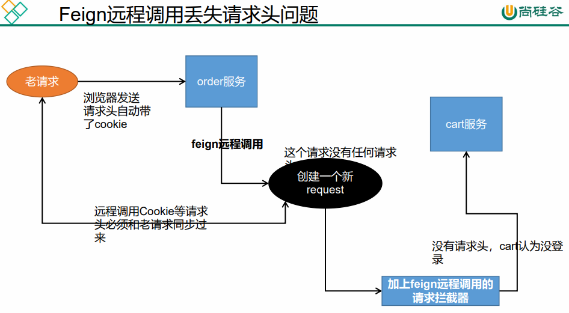
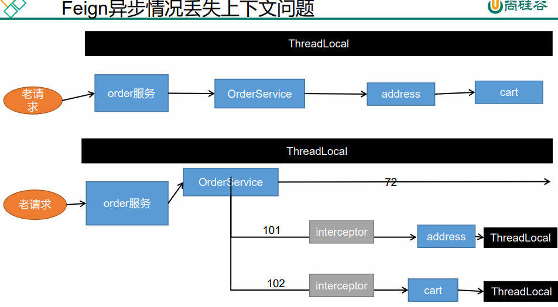
解决：配置类
@Configuration | |
public class MyFeignConfig { | |
/** | |
* 配置 feign 拦截器，添加 RequestInterceptor，把传过来的请求头 | |
* 转给 feign 远程调用带过去，源码会遍历 RequestInterceptor 集合调用 apply（）方法 | |
* @return | |
*/ | |
@Bean | |
public RequestInterceptor requestInterceptor(){ | |
return requestTemplate -> { | |
ServletRequestAttributes requestAttributes = (ServletRequestAttributes) RequestContextHolder.getRequestAttributes(); | |
HttpServletRequest request = requestAttributes.getRequest(); | |
String cookie = request.getHeader("Cookie"); | |
requestTemplate.header("Cookie", cookie); | |
}; | |
} | |
} |
# Feign 异步模式丢失上下文
原因：因为开启异步多线程，当前请求走的是一个请求的线程，路过 feign 调用开启的异步线程与请求线程不一样，所以我们可以通过传递请求的方式解决，否则 feign 拦截的 request 请求将为 null
解决
// 获取请求 | |
RequestAttributes requestAttributes = RequestContextHolder.getRequestAttributes(); | |
CompletableFuture<Void> f1 = CompletableFuture.runAsync(() -> { | |
// 每个线程都共享之前过来的请求 | |
RequestContextHolder.setRequestAttributes(requestAttributes); | |
// 2 远程调用查询收货地址列表 | |
List<MemberAddressVo> address = memberFeignService.getAddress(vo.getId()); | |
confirmVo.setMemberAddressVos(address); | |
}, executor); |
# 幂等性
https://serverless-page-bucket-dpreks5c-1305941917.cos-website.ap-hongkong.myqcloud.com/worknote/note-2/
# 秒杀
# 分布式集群
# 错误记录
# 微服务使用模块化时候导入公共模块导致 maven 更新依赖错误问题
问题：在使用微服务分模块化开发的时候导入公共模块的时候，公共模块频繁更新 pom 坐标导致服务模块更新坐标出现下面异常，并且无论怎么样注释公共模块的坐标也无法把公共模块给剔除出去，也可能是自己误操作的原因导致 maven 刷新坐标不起作用，但是错误原因很明显，所以根据报错去解决问题
io.renren:renren-fast:jar:3.0.0 构建有效模型时遇到的一些问题 | |
POM io.renren:renren-fast:3.0.0 (D:\workspace\java\gulimall\renren-fast\pom.xml) 的 'parent.relativePath' 指向 com.atguigu.gulimall:gulimall 而不是 org.springframework .boot:spring-boot-starter-parent，请验证您的项目结构@第11行，第10列 | |
io.renren:renren-generator:jar:1.0.0 构建有效模型时遇到的一些问题 | |
POM io.renren:renren-generator:1.0.0 (D:\workspace\java\gulimall\renren-generator\pom.xml) 的 'parent.relativePath' 指向 com.atguigu.gulimall:gulimall 而不是 org.springframework .boot:spring-boot-starter-parent，请验证您的项目结构@第11行，第10列 | |
com.atguigu.gulimall:gulimall-common:jar:0.0.1-SNAPSHOT构建有效模型时遇到一些问题 | |
缺少 org.apache.maven.plugins:maven-compiler-plugin 的“build.plugins.plugin.version”。 @ com.atguigu.gulimall:gulimall-common:[未知版本]，D:\workspace\java\gulimall\gulimall-common\pom.xml，第16行，第21列 | |
强烈建议修复这些问题，因为它们会威胁到您构建的稳定性。 | |
出于这个原因，未来的 Maven 版本可能不再支持构建这种格式错误的项目。 |

问题描述翻译的意思是，本来本服务模块使用的父工程是 springboot，但是却指向了导入 common 公共模块为父工程，解决办法就是在 <parent> 中添加
<relativePath/> <!-- lookup parent from repository --> |
<parent>
<groupId>org.springframework.boot</groupId>
<artifactId>spring-boot-starter-parent</artifactId>
<version>2.2.4.RELEASE</version>
<relativePath/> <!-- lookup parent from repository -->
</parent>
下面对 relativePath 解释来自 https://blog.csdn.net/gzt19881123/article/details/105255138
- relativePath 是 Maven 为了寻找父模块 pom.xml 所额外增加的一个寻找路径
- relativePath 默认值为 …/pom.xml
- Maven 寻找父模块 pom.xml 的顺序如下：
(1) first in the reactor of currently building projects
这里一个maven概念 反应堆（reactor ），
意思就是先从工程里面有依赖相关的模块中找你引入的
parent 的pom.xml，
(2) then in this location on the filesystem
然后从 你定义的 <relativePath > 路径中找，
当然你如果只是 / 即空值，则跳过该步骤，
默认值 ../pom.xml 则是从上级目录中找啦。
(3) then the local repository
这个就不说了，如果 （1） （2） 步骤没有则从 本地仓库找啦。
(4) and lastly in the remote repo
这个还用说吗，上面都找不到了，最后只能从远程仓库找啦，再找不到就报错给你看
# 远程调用服务超时报错
feign.RetryableException: Read timed out executing POST http://gulimall-coupon/coupon/spubounds/save | |
1.出现错误原理fegin 调用服务有个默认的时间超过这个时间会出现服务调用超时 | |
因为fegin 默认整合了ribbon和 hystrix 解决办法如下 | |
#hystrix 的超时时间 | |
hystrix: | |
command: | |
default: | |
execution: | |
timeout: | |
enabled: true | |
isolation: | |
thread: | |
timeoutInMilliseconds: 9000 | |
#ribbon 的超时时间 | |
ribbon: | |
ReadTimeout: 3000 | |
ConnectTimeout: 3000 |
# maven 编译乱码问题
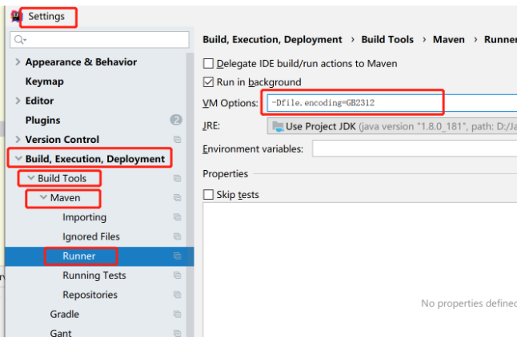
设置 -Dfile.encoding=GB2312
Error:(3,35) java: 程序包 com.atguigu.common.constant 不存在
因为修改了 common 包未能及时编译打包更新所以未能找到对应包，重新打包 common 重新引入 common 模块
Error:(6,20) java: 编码 EUC_CN 的不可映射字符，添加下面配置原因编码问题
<properties> | |
<project.build.sourceEncoding>UTF-8</project.build.sourceEncoding> | |
</properties> |
# maven
错误信息重新编译重新发布
Some problems were encountered while building the effective model for com.atguigu.gulimall:gulimall-common:jar:0.0.1-SNAPSHOT
'build.plugins.plugin.version' for org.apache.maven.plugins:maven-compiler-plugin is missing. @ com.atguigu.gulimall:gulimall-common:[unknown-version], D:\workspace\java\gulimall\gulimall-common\pom.xml, line 16, column 21
It is highly recommended to fix these problems because they threaten the stability of your build.
For this reason, future Maven versions might no longer support building such malformed projects.
# 异常解决：java.lang.IllegalStateException: Failed to introspect Class
# java.lang.IllegalStateException: Failed to introspect Class
- 异常详情
- 原因
- 解决办法
# 异常详情
Exception encountered during context initialization - cancelling refresh attempt: org.springframework.beans.factory.UnsatisfiedDependencyException: Error creating bean with name xxxxx
Lookup method resolution failed; nested exception is java.lang.IllegalStateException: Failed to introspect Class [classA] from ClassLoader [sun.misc.Launcher$AppClassLoader@14dad5dc]
# 原因
此异常原因是因为 classA 中使用了项目没有导入的类，从而导致类加载失败。一般来说如果使用了没有依赖的类应该会报 ClassNotFindException 的错误，但是如果只是导入却没有使用的使用可能就会报此错误。
通常此错误见与使用 maven 框架配置了第三方类的 scope 是 provided 的情况下。笔者在使用 spring boot、maven 时导致此错误。
# 解决办法
检查 classA 类中可能存在的没有依赖的类或者包，将之导入（或者加入 maven 依赖、或调整依赖的包中的依赖的 scope），总之使其类加载器能够在当期 classPath 找到此类即可。
原文地址：https://blog.csdn.net/huitoukest/article/details/88013763https://blog.csdn.net/huitoukest/article/details/88013763
# Seata 错误异常
org.springframework.beans.factory.BeanCreationException: Error creating bean with name 'globalTransactionScanner' defined in class path resource [com/alibaba/cloud/seata/GlobalTransactionAutoConfiguration.class]: Bean instantiation via factory method failed; nested exception is org.springframework.beans.BeanInstantiationException: Failed to instantiate [io.seata.spring.annotation.GlobalTransactionScanner]: Factory method 'globalTransactionScanner' threw exception; nested exception is io.seata.common.exception.NotSupportYetException: not support register type: null
服务模块引入公共模块的 Seata 启动报错
# 循环依赖问题
Description:
The dependencies of some of the beans in the application context form a cycle:
servletEndpointRegistrar defined in class path resource [org/springframework/boot/actuate/autoconfigure/endpoint/web/ServletEndpointManagementContextConfigurationRabbitTemplateConfiguration.class]
↑ ↓
| myRabbitConfig (field org.springframework.amqp.rabbit.core.RabbitTemplate com.atguigu.gulimall.gulimallseckill.config.MyRabbitConfig.rabbitTemplate)
└─────┘
详细依赖见博客
出现循环依赖之后，一定是双方都使用了依赖注入等待注入，这边我们可以自己创建
// 主要的 | |
@Primary | |
@Bean | |
public RabbitTemplate rabbitTemplate(ConnectionFactory connectionFactory){ | |
RabbitTemplate rabbitTemplate = new RabbitTemplate(connectionFactory); | |
this.rabbitTemplate = rabbitTemplate; | |
ininRabbitTemplate(); | |
return rabbitTemplate; | |
} |
如果这种方法无效，我们可以从错误信息中找到 rabbitmq (例子) 自动配置类，在其中查看循环依赖的 RabbitTemplate 是如何配置的，拿到参数连接工厂，我们可以直接 new 一个 RabbitTemplate 然后将连接工厂放进去，在将当前获得的 rabbitTemplate 赋值给 this.rabbitTemplate，缺点就是缺少了一些配置